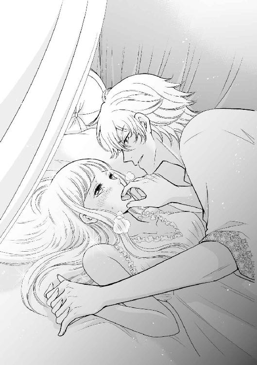
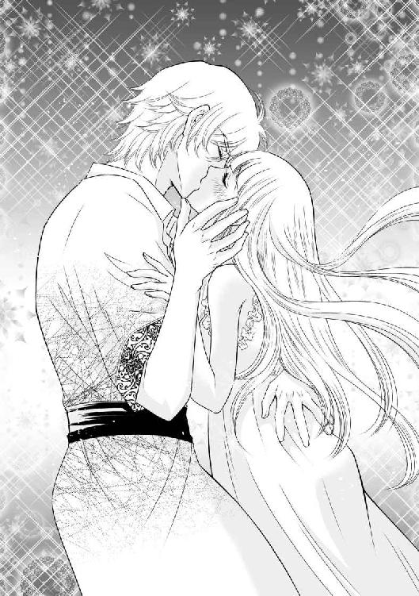
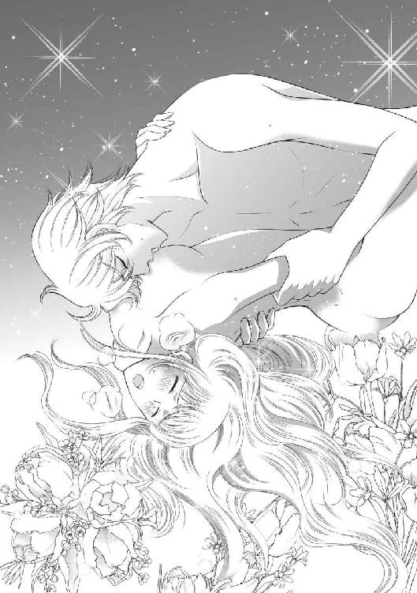

| 蛮族の姫は銀海の覇王にめちゃくちゃ愛される (LUNA文庫) | |
| 栢野 すばる | |
| 天海社／LUNA文庫 (2017) | |
蛮族の姫は銀海の覇王にめちゃくちゃ愛される
[著]栢野すばる
[イラスト]花里ひかり
プロローグ
夜のアイレンベルク城には、さざ波の音しか届かない。
月の光に照らされた波が、城が建てられた岸壁に静かに打ち寄せるばかりだ。
マリリの故郷は、極北の氷海諸島。
その島々を治める蛮族の長の娘として、マリリは生まれた。
氷海諸島の自然は厳しかった。マリリは、一年中氷の浮く、灰色の海しか知らなかった。
南の国の海がこんなにも静かで柔らかなものだなんて、想像したこともなかった。
目の前の男と見つめ合いながら、マリリは寝間着の前をぎゅっと握りしめる。
――今日は、妻として立てよう、アルス様のことを。
思えば、今までマリリは〝男を立てた〟ことがなかった。
最近、自分を良く思っていない女性たちが『マリリ様は男を立てるのが上手なのよ。だから陛下に気に入られてるんだわ』と陰口をたたいているのを聞いて、そんな概念があることを初めて知ったのだ。
どういう意味なのかはさっぱりわからなかったが、今唐突に気づいた。
マリリはぎこちない手つきで、〝夫〟が纏う薄い衣に手を掛けた。
「上を向け」
低い声でそう命じられ、マリリは手を止めて顔を上げた。
命じたのは、息をのむような美青年だった。濃い金の髪に冴え冴えとした青い瞳。伝説の海神もかくやと思わせる男前だ。
申し訳程度に纏った薄衣の間からは、鍛え上げた体躯が露わになっている。
彼の名はアルスタッド。
アイレンベルクの若き王にして、マリリを側妃に迎えた男だ。
気性は傲慢にして冷淡、その才知は未来の覇王と讃えられている......らしい。
だが、マリリにとっては、彼は意地悪そうに見えても、とても優しい夫だ。
マリリを受け入れてくれる、この世でただ一人の人と言ってもいい。
目の前にアルスタッドの端正な顔が迫り、マリリの唇がそっと塞がれた。
味わうように唇を重ね合い、マリリはアルスタッドのぬくもりに身を委ねる。
毎晩こうして口づけをするのが、夫婦になってからの二人の習慣だった。
「今日は何をしていた？」
しばらくのちに唇を離したアルスタッドが、マリリにそう尋ねた。
切れ長の美しい青い目で見据えられ、ほんのりと頬を染めながらマリリは答えた。
「武芸、鍛錬、してました、アルス様」
この国の言葉は、北の果てからやって来たばかりのマリリには、まだ難しい。
今の言葉も、ちゃんと通じただろうか。
不安に思っているマリリの表情がおかしかったのか、アルスタッドは小さく喉を鳴らして、マリリの長くまっすぐな銀の髪を撫でてくれた。
「また鍛錬か。熱心だな......それに言葉もずいぶんうまくなった」
アルスタッドの青い目に、マリリの顔が映っている。
銀の髪に赤い目......故郷の氷海列島では〝悪魔の子〟と呼ばれた忌むべき容姿も、この国では誰からも責められない。
夫のアルスタッドからも、一度も悪魔などと呼ばれたことはない。
まるで別の世界に、そう、天国に来たように思える。
――結婚できて、悪魔と呼ばれなくて......故郷にいるより、ずっと幸せになれたわ。
窓からの淡い月光に、アルスタッドの濃い金色の髪がほのかに輝いた。
――お嫁に行けないはずだった〝悪魔っ子〟の私が、人の妻に迎えられるなんて......。
目を細めたマリリに、アルスタッドもうっすら笑みを返す。
「俺も強い女が好きだ。それでいい」
そう言って、アルスタッドは再びマリリの唇を奪った。冷たい投げやりな口調とは裏腹の、絡みつくような接吻だ。
マリリは目を閉じ、唇を開いて、彼の熱を帯びた舌を受け入れた。
かすかな音を立て、彼の舌がマリリの口腔をかき回す。マリリの身体の芯に、最近覚え始めた、甘い疼きが走った。
「んっ......う......」
アルスタッドの手が、マリリの手首をぎゅっと握りしめる。向かい合って寝台に腰掛けたまま、マリリは愛する夫と、ひたすら舌を絡め合う。
こらえがたい情欲を逃すかのように、かすかに顔を離したアルスタッドがため息をついた。
「もう一度、今度はお前から俺に接吻しろ」
アルスタッドの目は獣のような光をたたえて、マリリを見据えている。マリリはこくんと息をのんで、小さな声で返事をした。
「っ、はい、アルス様......」
膝立ちになり、マリリはそっとアルスタッドに口づけた。触れ合った唇から、彼の満たされた気配が伝わってくる。
――この方は、私がお仕えする、私がお守りする方......銀海の覇王、アルスタッド陛下......。
求められるがままに口づけを交わしながら、マリリはそっと、先ほど中断した〝作業〟を再開した。
アルスタッドの身体に触れようと、マリリは手を彼の衣の下に滑り込ませる。
指先が、立ち上がり始めた剛直に触れた。
燃えるような体熱を放つその部分は、早くも岩のような硬さを帯び始めている。
――夫を......立てる......それが良い妻の仕事......。
マリリはそれを、布越しにそっと掴んだ。
杭のようなそれが、ひくりと手のひらの中で蠢く。
マリリの唇をむさぼっていたアルスタッドが動きを止め、静かな声で尋ねてきた。
「......何をしている？」
優しく肉杭を握りながら、マリリは小さな声で答えた。
「アルス様、の、男を、立てる......です......」
目を丸くしたアルスタッドに微笑みかけ、マリリは身をかがめた。
そうして、衣装から引きずり出した肉杭に唇を寄せる。
唇が触れた瞬間、硬く反り返ったそれがどくんと脈動した。アルスタッドが慌てたように、マリリの肩に手を掛けた。
「いや、待て、男を立ててくれるという気持ちはありがたいが、たぶん意味が違う。おいマリリ、止せ......」
彼が焦っているのはわかったが、早口で言われてもよくわからない。
マリリはかまわず、血管の浮いた滑らかな器官に舌を這わせた。
「おいっ、マリリ......っ」
ぺろりと先端ににじんだ露を舐め取ると、無駄なく引き締まったアルスタッドの身体がびくりと跳ねた。
そのまま舌先で、剛直の筋をつっと辿る。
しばらく舌での愛撫を続けるうち、それは反り返らんばかりの硬度でマリリの目の前にそびえ立った。どうやら今日も妻の務めの一つを果たせたようだ。
「男立った、アルス様！」
そう報告すると、アルスタッドが引き締まった喉をごくりと鳴らした。
「ま、まあいいだろう......間違ってはいない。脱げ」
アルスタッドの長い指が、マリリがかろうじて纏っていた薄い寝間着を剥ぎ取る。彼は己の乱れた衣も脱ぎ捨て、低い声でマリリに告げた。
「今夜もお前を抱いてやろう。せいぜい可愛く啼いて俺を満足させるんだな」
「いつも、まんぞくしてない？」
素直にそう聞き返すと、アルスタッドは慌てて否定してくれた。
「......っ、いや、している。しているが言ってみただけだ」
優しい答えにほっとして、マリリは再びアルスタッドに微笑みかける。マリリよりも十歳年上の、大人の男のはずの彼は、なぜか少年のようにぱっと耳を赤く染めた。
「まったく、お前くらいだ、この俺に対して、そんな気安い口をきくのは」
ため息とともに押し倒され、大柄な身体に組み敷かれて、マリリはほっとしてアルスタッドの背中に腕を回した。
滑らかな肌は汗ばみ、マリリの乳房を押しつぶした硬い胸板からは、どくどくと鼓動が伝わってくる。
力強い手が、マリリの腿に掛かって大きく足を開かせた。
両足の間に、アルスタッドの身体が割り込んでくる。そのまま、マリリの足は肩の上に抱え上げられた。
「お前を......今日も抱きたい」
アルスタッドに言われ、マリリはこくりと頷いた。
濡れ始めた秘裂をアルスタッドの指先が辿る。
くちゅ、と甘い蜜音を立ててマリリの花唇を開かせ、指先で秘部を弄びながら、アルスタッドが言った。
「痛くないか」
「はい」
素直に頷くと、彼の指が熱い泥濘の深くまで沈み込んできた。マリリの意思とは裏腹に、その指をくわえ込もうと花襞の間がひくりと震える。
「あ......」
手の甲を唇に押しつけ、マリリははしたない声をあげるのを我慢した。
「......っふ、う......」
指先で敏感な部分を弄ばれるだけでも耐えがたい。
なのに、両足を肩に抱え上げられたせいで秘部が晒されてしまって、恥ずかしくてたまらない。
マリリは手の甲で顔を半ば隠したまま、小さな声でアルスタッドに懇願した。
「も、アルス様が、来て......いつもの、して......」
その言葉に、アルスタッドが動きを止めて目を見張る。
――あ、あれ？ 何か変なこと言っちゃったかな？
イマイチ言葉に自信のないマリリは、必死で知る限りの単語をかき集めてアルスタッドに訴えた。
「あの、入れて？ アルスタッド、さまの、入れて......？」
アルスタッドが、真顔でマリリを見つめたまま、うめくように呟く。
「......その態度が天然だというなら、とんだ悪女だ、お前は」
言いながら、アルスタッドが身体を倒し、マリリの上半身をかき抱く。
同時に、蜜口の先端に、熱く硬い欲望の先端が押しつけられた。
「一応、いつものやつを言っておくか......。もうわかっていると思うが、マリリ、俺はお前を愛している」
マリリの首筋に顔を埋め、アルスタッドが呟く。いつもの自信に満ち溢れた強い声ではなく、何だか、少しだけ心細そうな声だった。
「わたしも、アイシ、テル......」
発音が難しくてぎこちなくなってしまうが、マリリはそう言ってアルスタッドの金色の頭をかき抱いた。
マリリの言葉に応えるように、アルスタッドが身体を進める。担ぎ上げていた足を肩から下ろし、マリリを床の上に組み敷いた。
アルスタッドの切っ先が、いつものように、ゆるゆるとマリリの身体をこじ開ける。
閉じ合わされていた隘路を彼自身の欲望で力強く押し開かれて、マリリは思わず声をあげた。
「あ、ああ......っ」
ずぶり、と、鋼のような剛直がマリリの身体を貫く。
灼熱の楔で身体を暴かれ、激しくかき抱かれて、マリリは思わず背をそらした。
もがくマリリを離すまいと言わんばかりに、背を抱くアルスタッドの腕に力がこもる。
貫かれ、激しく唇を奪われ、マリリは思わずアルスタッドに縋りついた。
息を乱しながら、アルスタッドが繰り返しマリリの身体を突き上げる。
汗に濡れた唇でマリリの唇を吸い、指に指を絡ませて、蜜音を立ててマリリの身体をむさぼる。
獣のように身体を開かれ、たたきつけるような抽送を受け止めながら、マリリは彼の身体に縋りついた。
「や、あぁ......っ、アルスさま、ぁ......」
蜜路をひくつかせながら、マリリは切れ切れの声でアルスタッドの名を呼ぶ。
息が苦しくて、目の前がかすんで......それなのに、このままめちゃくちゃになるまで抱かれたい。
興奮を抑えがたいと言わんばかりに、アルスタッドがマリリの首筋に小さく歯を立てる。そのちくりとした感触すらも、マリリの身体の芯に新たな官能の火を呼び起こした。
快楽に煽り立てられるように、マリリはアルスタッドの裸の腰に足を絡めた。
「っ......だめ、いっちゃ、う、いっちゃう......の......っ......」
必死で訴えても、アルスタッドの動きはやむことがなかった。感じやすい奥を、焦らすようにぐいと突き上げられて、マリリの喉奥から嬌声が漏れた。
くちゅくちゅという蜜音が強まり、マリリの白い肌がばら色に火照り始める。
「あ......あ......」
身体を震わせるマリリを、少し身体を離したアルスタッドが愛おしげに見つめた。
秀麗な額には一筋の汗が伝い、青い目は欲情に潤んでいる。
繋がり合ったまま、マリリは愛する夫と見つめ合う。
「ぁ、すき......すき......」
力の入らない手で、マリリは彼の頬をそっと包み込む。
目を細めたアルスタッドが、彼を知る誰もがびっくりするような、甘く優しい声でマリリに囁きかけた。
「早く赤子が欲しい」
マリリは、小さく頷いた。マリリも同じ気持ちだからだ。
「いつできるんだろう。早くできないかな」
性急な言葉に、マリリは思わずクスッと笑ってしまう。
「栄養......とります！ 早く赤ちゃんができるように」
「......ふ、そうだな、それでいい。焦らなくてもいいが......こうして二人で過ごすのも悪くない」
マリリの答えに満足したように、アルスタッドが再び力一杯マリリの身体を抱きしめた。
激しい抽送が、ますます速まる。
汗の雫がマリリの身体に落ち、身体を穿つ熱杭はますます硬度を帯びた。
彼の体熱に包まれ、マリリは幸福なため息をついた。愛しさに駆られてアルスタッドの背を強く抱きしめると、彼がマリリのいちばん深いところで動きを止めた。
「......っ、可愛い奴だ......マリリ......」
ため息のような呟きとともに、マリリの身体の奥の闇に、アルスタッドの熱情が吐き出される。
蜜路に包まれ、その中でビクビクとのたうつ肉杭をくわえ込んだまま、マリリはアルスタッドの顔に、己の額をこすりつけた。
――大好き......アルス様、わたしの、アルスタッド様......。
汗に濡れた身体に抱きしめられ、再び口づけを交わしながら、マリリは窓の外の月に視線を投げかけた。
夜はまだ明けそうにない。アルスタッドの身体が再び熱を帯び始め、尻の双丘をなで回す指先が、ねっとりと獣欲をにじませた動きに変わってゆく。
「ん、あぁ......っ......」
「本当にお前は可愛いな......もっと俺だけに、その可愛い顔を見せてくれ」
執拗な口づけを再び受け止めながら、マリリは白くかすれていく視界の中、そっと目を閉じた。
――本当に、アルス様のお側に上がれて良かった。私の幸せは、ここにあるのだわ......。
第一章 蛮族の姫君、銀海の王に嫁ぐ。
......物語は、数ヶ月前に遡る。
部族の厄介者の〝悪魔っ子〟である、銀髪赤目のマリリが送り込まれたのは、アイレンベルクの王城だった。
氷海諸島は一年のほとんどを通して氷点下の、生物が暮らすには非常に厳しい地域だ。
凍てつく世界では、神に縋らずして生き延びることはできない。
住まう人々も、必然的に迷信深くなる。
マリリの父は、氷海諸島を束ねる長であった。
しかし〝末の姫君〟のマリリは、忌むべき悪魔と同じ目、同じ髪の色で生まれた。
そのため、マリリは幼い頃から、兄弟の中で一人だけ別の小屋で育てられた。愛してくれたのは母と乳母だけだった。
時は流れて、去年のこと。
大国アイレンベルクの使者を迎えた父は、長い話し合いの末、氷海諸島ごと、アイレンベルクの属国に下ることを決意した。
氷海の一族が諸外国と交流を始めて百年。
他の世界を知った一族の人間からは「余所の国の人間のように良いものを食べ、良い船に乗り、丈夫な家に住みたい」という声が挙がるようになっていた。
しかし、今の氷海の一族にはそんな力はない。民に豊かな生活を与えるのは、このままでは難しい......。族長であるマリリの父はそう判断したようだ。
族長は、アイレンベルクに忠誠を誓い、氷海の航路の安全を担う役割を仰せつかった。
そして、和平の証に〝悪魔っ子〟の厄介者、マリリを人質に差し出したのだ。
「我らが裏切ることがあれば、この娘を好きなように処分してください。まがまがしい姿をしてはいますが、私の妻にとっては愛する娘のようで」
それが、マリリが聞いた、最後の父の言葉だった。
結局父からは愛されたことなどなかった。兄たちのように、父から微笑みかけられることもなく、汚い虫のように扱われて終わった。
――泣いちゃ駄目よ、私はここで人質として誇り高く生きるの！
突然住み慣れた世界から放り出された恐怖を振り払い、マリリは顔を上げた。そのときだった。
『このクソ忙しいときに嫁の話なぞ持ち込むな！ ガキなど必要ない。俺がくたばったら、適当にいちばん才覚のある人間が王の椅子に座れ！』
突然とんでもない罵声が飛んできて、マリリは立ちすくんだ。
難しい言葉。意味がよくわからない。だが誰かが怒っている。
......マリリが来たことを怒っているのだろうか？〝悪魔っ子〟など寄越すな、と苦情を言われているのだろうか。
戸惑うマリリに、氷海の言葉に通じた、通訳の女性が言う。
「陛下のおなりです、お顔を伏せてお迎えくださいませ」
マリリの国の言葉で、そう囁かれた。
慌てて膝を折り、顔を伏せて、マリリは王が通り過ぎるのを待った......つもりだった。
たくさんの人が近づく気配がし、マリリの側でピタリと止まる。
『なんだこの女は』
傲岸な口調だ。しかし早口すぎて、マリリにはまだ聞き取れない。
慌てて通訳の女性が何かを答えてくれる。
――王様が怒ったんだわ！ どうしよう......こんな穢れた容姿だから......血の色の赤い目も、吹雪の銀の髪も不吉だから......。
唇をそっと噛んだマリリの顎が、不意にくいっと持ち上げられた。
「マリリ様、陛下にアイレンベルクの言葉でご挨拶を」
通訳の女性に囁かれ、マリリは慌てて、膝をついて口上を述べた。
「ひょうかい......から......きました......ぞくちょうの、むすめ、マリリです、いだいなるおうさま」
ここに連行される船の中で、母がくれたお守りを握りしめながら、何度も練習した言葉だ。たぶん正しく言えたはず。
息をひそめて王の反応を待つマリリの耳に、聞き慣れた氷海の言葉が飛び込んできた。
「顔を上げろ」
驚いて、マリリは声の主を見上げた。
――海神様！
純金をすき込んだような髪に、碧玉を埋め込んだような瞳。幼い頃母に聞かせてもらった〝海の神様〟そのものの容姿ではないか。
男の美しさに、マリリは言葉を失う。
「俺はアルスタッド。この国の王。お前の名は」
驚きで声が出ないマリリの肩を、通訳の女性が慌てたように揺すった。
「マリリ様、お答えを」
我に返ったマリリは再び平伏して、故郷の言葉で美しき王の問いに答えた。
「マリリと申します。どうぞ、陛下の望み通りに、何でもご命令くださいませ」
口にした途端、悲しくなる。故郷では〝悪魔っ子〟と呼ばれ、故郷を離れれば、自由のない人質生活。
すべてはこの忌まわしい姿のせいだ。なぜこんな容姿に生まれてしまったのだろう......。
かすかに表情をゆがめたマリリの顎が、くいと引き上げられた。
「ふうん、珍しい目の色だ」
海の神様のような男が、艶のある声でそう呟く。マリリははっとなって、紅玉のような瞳を見られまいと瞼を閉じる。
「もう一度目を開けろ」
しかし、傲岸な口調でそう命じられては逆らえなかった。恐る恐る目を開けたマリリの目の前で、王が不意ににやりと笑った。
「お前が氷海の部族から貢納された娘か」
マリリはその言葉に頷く。
「......俺がどう扱ってもいいんだな」
その声音ににじむ揶揄するような響きに、マリリは身を固くする。だが相手は宗主国の王。マリリが逆らえるはずはない。
ギクシャクと頷くマリリの手を、王がぐいっと乱暴に引いた。
マリリは、とっさに身体の重心をずらし、乱暴な王の動きに合わせてすっと立ち上がる。
その反応に、王が驚いたように片方の眉を上げた。
「武芸をたしなんでいるのか」
言葉を発していいのかわからず、マリリは無言で深々と頭を下げた。
マリリは、吹雪の中、逞しい男たちに混じって、一人必死に隊列に付いていったことを思い出す。
普通の女性であれば、あそこまで厳しい狩りの義務は課せられない。だが、〝悪魔っ子〟は別だったのだ。マリリのような赤い目に銀の髪の子は、悪魔から、悪魔の肉体を授かっているのだから......。
「なるほど、面白い」
不意に王がニッと笑った。
「では、お前を好きなように扱わせてもらおう」
王はひとこと言って、侍女たちの集団に向かって、マリリをぐいと押し出した。
『この女を綺麗に磨き上げて、俺の閨に連れてこい。側に置いて俺の子を産ませる。氷海諸島と我が国の友誼の証となる子だ、そこそこの価値はあるに違いない。それならお前たちも文句はないだろう？』
早口でまくし立てられたアイレンベルクの言葉が聞き取れず、マリリは必死で周囲の人々の様子をうかがう。
――今なんと仰ったの？
そのときだった。
誰かが、強い害意を秘めて、マリリを睨みつけたのがわかった。
あまりの悪意に、マリリの身体が一瞬すくんでしまう。
狼も、白熊も、これほどの純粋な呪詛のような感情をぶつけてくることはなかった。一体誰が、マリリを睨んだのだろう。
慌てて様子をうかがうが、アイレンベルクの人たちの表情はうまく読めず、人の数も多すぎて、気が混じり合ってしまって、わからない。
そこにいたのは、王の側近である男性たちが五人ほど、それから取り巻きとおぼしき貴族の青年が七、八人だ。
さらにその背後には、王の侍女が十人以上ぞろぞろと列を作っている。
侍女たちは皆、王宮の制服を着て、同じ形に髪を結っていて、年の頃も近いようだ。
アイレンベルクの人たちをまだ見慣れていないマリリには、一瞬、見分けがつかないくらいよく似ていた。
――誰......？ 今のは、何？
だが、その強烈な害意は、一瞬だった。潮が引くように消え、気づけば何も残っていない。
怯えるマリリを振り返り、王はひとこと、吐き捨てるように言った。
「では、今日からよろしく。氷海の姫君」
「あ、あの......」
マリリに何の説明もしないまま、王がぷいと背中を向けて去っていく。彼に従うたくさんの人々も、慌てて早足の王の後を追ってゆく。
――ああ、あの方が、この群れの長なんだ。
マリリの脳裏に、狼の群れの様子が浮かぶ。
銀のひときわ大きな雄狼が、たくさんの狼を引き連れて氷原を走り抜ける姿を思い出す。
――陛下は、この国でいちばん強くて、美しい狼なんだわ......。
あの美しい王は、この国すべてを率いる特別な雄なのだ。不機嫌で誰にも媚びず、どの個体よりも強い雄。
彼こそが、銀海の覇王と呼ばれたアルスタッド王......。
逞しい背中を見送りながら、マリリはごくりと息をのんだ。
――あの人は強い......怖いわ......。
マリリの直感が〝同類だ〟と告げる。
生まれたときから〝特異な肉体〟を持って生まれたマリリは、人よりも勘が鋭い。
たまに、言葉では説明できないようなことを見抜いてしまうことがあるのだ。
今回もそんな気がした。〝悪魔っ子〟と呼ばれ、忌まれ恐れられて遠ざけられてきた自分とあの王は、似ていると。
だが、宗主国の王と、まともに族長の姫として扱われてこなかったマリリが〝似ている〟なんて、不敬に等しい考えだ。
――忘れましょう......。私はただ、ここで大人しく、迷惑にならずに働くのよ。
マリリは直感的に得た確信を、そっと自分の胸に納めた。
そして、その夜。
マリリは侍女たちによって徹底的に磨き上げられ、見たこともないような豪奢な一室に案内された。
今日一日、害意の正体を探って気を張り詰めていたので、くたくたになってしまった。
だが、あの害意の主はマリリにはもう近づいてこないようだ。城は広く、人も多い。恐らくはこの部屋にこもっていれば、あの害意の主と接触することはないだろう。
ようやく警戒を解き、マリリは部屋を見回す。
――ここが、アルスタッド陛下のご寝所......。
寝台も、窓に嵌まった透明なガラスも、一つ一つの調度も、すべて宝物のように煌びやかだ。
たかが寝室にこれほどの品を揃えるとは。もはや言葉もなく、マリリはそっと首を振る。
――こんなものは、私の故郷には一つもなかったわ。お父様ですら所持していなかった。
マリリの父も一応、氷海の諸部族を統べる総領だったのだが、おそらくは、アルスタッドの権力は、桁が違う。マリリは、そのことを肌で実感した。
「おい」
低い声で呼ばれ、マリリはびくりと肩を震わせ背後を振り返った。
寝室の入り口で、アルスタッドが腕組みをしてじっとマリリを見つめている。青い瞳は冴え冴えと輝き、闇夜の満月よりもまぶしく見える。力に溢れた佇まいに圧倒され、マリリはそっとうつむいた。
「お前はアイレンベルクの言葉がわからないのか？」
氷海の言葉で話しかけられ、マリリは頷く。
「では今日から練習しろ。多少はこの国になじむ努力をしてみせるがいい」
そう言って、足音もなくアルスタッドが歩み寄る。身体を硬くするマリリに、あと数歩のところまで近づいた刹那......。
「......っ！」
アルスタッドがすさまじい勢いで腰の剣を抜き放ち、マリリの喉元に切っ先を突きつけた。
とっさにかわそうとしたマリリは、ギリギリのところで踏みとどまる。
「殺されると思ったか？」
アルスタッドが薄い笑みを浮かべ、マリリに尋ねた。
なんと答えるべきか......マリリはしばし躊躇し、乾いた唇をゆっくりと開く。
「いいえ」
「だろうな、お前は俺の剣閃を目で追っていた」
アルスタッドの言葉に、マリリは無言で目を見開く。
「俺が剣を抜いた瞬間からな......お前は何者だ。氷海の送り込んだ刺客か？ ただの女だという言い訳は聞かない。お前のような手練れは、俺の部下にも滅多に見かけない」
マリリの身体が凍りつく。
まずい。〝悪魔っ子〟の秘密に感づかれてしまったのだろうか。
この国でもマリリは〝忌むべき存在〟として隔離されてしまうのだろうか。
足が小さく震え出す。
......銀髪赤目の〝悪魔っ子〟は、常人をはるかに超える運動能力を持って生まれることが多い。
マリリもそうだった。
熟練の狩人である男たちと行動させられても、一度も脱落をしなかったのはそのおかげだ。
昔から、早く動くものがゆっくりと見える。
弓矢で鳥を射落とすことなど、十歳の頃には造作もなく行えていた。
皆が力尽きても鹿を追って走り続けることができるし、女子の手には余る鉄の剣を軽々と振り回すこともできる。
なのにマリリの見た目は、筋肉が薄く華奢なままなのだ。
だから皆、マリリを不気味だと、人間とは思えないと言っていたのだ。
「俺が寸前で剣を止めることもわかっていたのだな。すくんで動けぬフリをした。恐らくは己の技量を知られないためにな。違うか」
青い目がマリリを射貫くように見据えている。
――嘘は、バレる......。
マリリは諦めて、小さな声で答えた。
「仰せの通りです、陛下」
「刺客か？」
単刀直入に聞かれ、マリリは慌てて首を振る。
「違い......ます......」
しかし、それを証明する手立てなど何もない。
「まあいい。お前が俺を殺すための暗器を隠し持っていないか、まずは調べさせてもらおう。ついでに......味見でもさせてもらおうか。今日からお前は俺の寵姫。俺のとなりにくだらない女が陣取らないよう、お前が虫除けになるがいい」
立ちすくむマリリの身体が、軽々と抱き上げられる。避けることも振り払うこともできなかった。アルスタッドの動きには、抗えなかった。
――私よりも......強い......？
マリリの身体が震え始める。その様子を諦めと捉えたのか、アルスタッドは青い瞳に酷薄な光を浮かべて言った。
「処女のフリか。刺客であれば閨の手管など一通り仕込まれているだろうからな。俺の疑いを逸らすには、その態度でいいだろう。まあ、刺客としては合格だ」
マリリの身体を寝台に投げ出し、アルスタッドが冷ややかな口調で言う。
「口を開けろ」
寝台に投げ出され、起き上がろうとしていたマリリに、アルスタッドがのし掛かってくる。痩身なのに圧倒的な力だ。

マリリの両足の間に膝をつき、組み伏せ、指の背でマリリの唇をこじ開けた。
しなやかな指先に口内をまさぐられ、マリリの目に涙がにじんだ。
――どうしよう、怖い......。
強靱な肉体を持つマリリは、今まで〝他人に害される〟恐怖をほとんど感じたことはなかった。マリリにとって、恐ろしい生物は〝氷海の王者〟と呼ばれる獣、白熊くらいのものだ。
だが、今は、この王のことを白熊よりも恐ろしく感じる。
「ん......ぐ......」
王の指はマリリの頬の内側を執拗にまさぐり、舌の付け根と歯の裏側を何度も往復した。
「どうやら口の中には隠していないようだな」
息を荒げるマリリの薄い寝間着に、王の手が掛かった。
「次はこちらだ」
王の手に力がこもり、繊細な布地を止めていた寝間着のボタンがはじけ飛ぶ。
「いやぁ......っ！」
思わず悲鳴をあげたマリリの肌が、夜気のもとに晒された。
――ど、どうしよう、私......裸に......。
侍女たちが用意してくれた閨の衣装には下着がなくて不思議に思っていたのだが「そういうものなのです」と説明され、我慢していたのに。
王が無言で、脱がせた薄物でマリリの手首を縛り上げ、寝台にくくりつける。
「お前の力ならば、このような拘束を解くのはたやすいだろうが......解いたが最後、俺への叛意ありと見做す」
頭の上で腕をくくられて自由を奪われ、裸身を晒した姿で、マリリは震え上がった。
王の視線が、マリリの無垢な肌をじりじりと焼く。耐えがたい羞恥と恐ろしさに、マリリは思わず太腿を強くとじ合わせ、身体をひねる。
外気に晒された肌が鋭敏に反応し、柔らかな乳嘴がつんと尖った。
もう、何も隠していないことはわかってもらえただろうか。縋るように見つめるマリリに、王が冷酷な声音で言った。
「女の刺客が貴人の閨に侍るときは......大概ここにろくでもないものを仕込んでやってくる」
何の話だろう、と思ったマリリの膝裏に手が掛かり、大きく足を開かされる。
「いやあ......っ！」
思わず悲鳴をあげたマリリは、王の視線の先がどこに向いているのかを知って愕然となった。
人目に触れさせたことのなかった秘裂を、王の青い目がじっと見つめている。
「あ、あ......おやめ......ください......」
「それを、俺の国の言葉で言え」
そう命じられ、マリリは慌ててアイレンベルクの言葉を思い浮かべようとした。だが、こんな状況では何も思いつかない。
視線を遮りたくて膝頭を合わせると、王の手が再びマリリの足を開かせて、恥ずかしい部分をますます露わにさせた。
「嫌......お願い、見ないで......こんな不浄な場所......」
うわごとのようなマリリの言葉を無視し、王がゆっくりと、和毛に覆われた秘所に手を伸ばす。
「だめ......っ」
アルスタッドの指が、ひっそりと閉じ合わされた陰唇に触れた。
マリリの身体がびくん、と反応する。だが、彼はマリリの様子などお構いなしに、秘められたその裂け目に、幾度も指を行き来させる。
身体の奥からじわり、とぬるい何かが湧き出す。月のものが狂ったのかと驚き、マリリは身体を起こそうとした。だが「解くな」と命じられた手首の衣装が邪魔をして、動けない。
「この中に薬、もしくは小さな針を隠して寝所に上がる刺客が多いと聞いている。お前は何を隠しているのだろうな」
「い......いや......陛下......いけま......」
言いかけたマリリの身体が、再び大きく跳ね上がった。
ぬるりと湿り気を帯びたそこに、王の指先が沈み込んだからだ。
「ああ......ッ！」
マリリの目に、涙がにじんだ。信じられない。こんな場所に指を......マリリは懸命に腰を引き、王の指から逃れようとした。だが、自由を奪われているマリリにはどうしようもない。
秘部を恥ずかしい姿勢で晒け出したまま、マリリはただひたすらに、首を振った。
「おやめください......お願い、だめ......！」
じゅぷり、と音を立てて、指先が付け根まで沈み込む。わななく秘裂の中を、その指がゆっくりとかき回した。
「い、やぁ......っ」
マリリは思わず泣き声をあげた。中の襞を確かめるように、王の指が濡れた蜜壁を幾度も幾度も擦る。そのたびに、マリリの下腹は大きく波打ち、ますます蜜を溢れさせてしまう。
だが、こんな暴虐をマリリの身体に加えている王は、顔色一つ変えなかった。
「浅いところには何も仕込んでいないようだ」
指がさらに奥を探るように蠢く。たたまれた柔らかな襞が押し広げられるたびに、マリリの目尻から幾筋も涙がこぼれ落ちた。
動きたくないのに、指で深い場所をまさぐられるたびに、身体がひくりと反応してしまう。全身に汗が噴き出し、マリリはうわごとのように懇願の言葉を口にした。
「あ......あぁ......お、お願い......やめ......」
「......今のところは何もないようだ。まあいい。毎度調べてやる。俺が飽きるまではな」
震えるマリリの蜜口から、指が抜かれた。
ようやく終わりかと、ほっと力を抜くマリリの足の間に、王の大柄な身体が割り込む。
「では、次は寵姫の役目を果たせ。教え込まれた閨の技で俺を満足させてみせろ」
教え込まれた閨の技とは何のことなのだろう。母は「もし陛下の側に召し上げられることがあれば、心からお尽くし申し上げるように」としか教えてくれなかった。
気の利いた言葉も返せないマリリの前で、王が纏っていた衣装を脱ぎ捨てた。
息をのむような、鍛え上げられた肉体が露わになる。
こんなに間近で男性の裸体を見たことがなかったマリリは、自分の恥ずかしい姿も忘れて思わず目を逸らした。
――なぜ、脱ぐの？ 肌で温め合うほど寒くないのに......。
だが王は、無知なマリリにいろいろ説明してくれるほど、優しい男ではなかった。
すべての衣装を脱ぎ捨てた王の肢体に、マリリは息をのむ。
足の間に赤黒く反り返る怒張、あれは何なのだろう。引き締まって割れた腹に付くほどの勢いで、身体の一部が反り返っている。
王は絶句するマリリの身体に覆い被さり、手を伸ばして彼女のいましめを解いた。
マリリの下腹部に、焼けるように熱くなったその肉杭が触れる。
――何？ 何をされるの......これは何？
焦るマリリの両足を抱え、王は彼女の腰を己の方に引き寄せた。
「お前はいい身体をしているな、氷海の娘。弄り回していたら犯したくなってきた」
マリリの蜜口に、昂ぶる剛直の先端がひたと押し当てられる。
ぞわり、と全身が総毛立った。
何をされるのか察しがついたからだ。そしてこの行為からは逃げられないことも。
「やめ......」
震え声のマリリの抵抗を、王が冷たい声で遮る。
「止めるわけがないだろう。お前の仕事は俺の閨の相手だ。せいぜい真摯に務め上げるがいい」
王がそう言い捨てて、ぐいと身体を進めた。
先ほど散々かき乱されたせいで濡れそぼった場所に、圧倒的な質量を持ったその熱塊が、ずぶずぶと沈み込んでいく。
身体をこじ開けられる違和感に、マリリは思わずうめき声をあげた。
「い......いや......あ、あぁ......っ」
思わず縋りつきかけて、マリリははっとなる。
王に触れたら罰されるのでは、と、マリリは困惑し、行き場のない手で必死にシーツを掴んだ。
「あ、あぁ......だめ......大き......いや......っ」
熱塊を呑み込みながら、マリリは必死に四肢を突っ張らせて、行為に抵抗しようとした。
王の指が、緊張に張り詰めたマリリの乳房に伸び、硬く凝った乳嘴をきゅっとつまみ上げる。
痛みと、それと同じくらいの得体の知れぬ快感が、マリリの身体の芯を走り抜けた。
「ひぃっ！」
蜜窟を穿つ肉杭のすべてが、マリリの身体に沈み込む。
痛いような痺れるような感覚が、下腹中に広がった。
下生え同士を焦らすように擦り合わせながら、王は獣欲に濁った声でマリリに告げた。
「では見せてもらおうか、蛮族の妙技とやらを」
何のことだろう。まるで力が入らないから、何もできない。
それに、これから何をされるのかわからなくて、怖くてたまらないのだ。
いくら〝悪魔っ子〟で人よりはるかに強靱な力を持っているとはいえ、マリリの中身は普通の女の子......いや、まともに人と交流することもなく、遠ざけられて孤独に育った無知な十七歳なのだ。
――お母様、ばあや......！
唯一マリリに優しかった二人の名前を、マリリは心で呼んだ。
マリリを貫く肉の杭が、ゆるゆると前後を始める。痛いのに、同時に疼くような得体の知れない感覚が身体に走る。
同時に聞くも恥ずかしいような淫らな水音が、マリリの足の間からかすかに聞こえ始めた。
「どうした、何か俺を喜ばすような真似をしてみせろ」
試すような王の口調に、マリリはぼろぼろと涙をこぼしながら、唇を噛みしめる。
――恥ずかしい......怖い、痛い......助けて......誰か......。
涙が流れ始めたら、もう、止められなかった。
〝悪魔っ子〟として氷海に暮らしていた頃の方が幸せだったのではないか。そんな思いが、マリリの心を過ぎる。
「泣き真似か、まあ......そそられなくもないな」
くすりと笑った王が、マリリの唇に、噛みつくように接吻をした。王が動くたびにぐちゅぐちゅという音が聞こえ、いたたまれない気分になる。その上、唇をむさぼられて、うまく息もできない。
――これから何されるの......いや......。
マリリの身体が、あまりのことにガタガタと震え始めた。
知らない国で、知らない人に囲まれ、王や通訳の人以外には言葉も通じず、心身ともに疲れ切っていたことを遅まきながら実感する。
――怖い......駄目、怖い......。
それに〝悪魔っ子〟のマリリは、生まれてこの方、自分よりも強い存在に組み敷かれ、押しひしがれたことなどなかったのだ。
力で叶わぬ王に淫らなことをされて、怖くてたまらない。
足も手もガタガタ震えて、抑えられない。歯の根も合わなくなってきた。
あまりの震えようを異様に思ったのか、王が不審げに動きを止め、ずるりと音を立てて肉杭を引き抜き、マリリの顔を覗き込んだ。
「......どうした」
答えようとしたが声が出ない。身体が引きつり、マリリは反射的に喉を押さえた。
――息が......！
吸おうとしても息が吸えない。震えを制御できないまま空気を求めてマリリはもがいた。
――息ができない......助けて......死んじゃう......！
どう頑張っても呼吸ができなくて、マリリは恐慌状態に陥った。
「落ち着け」
マリリの身体が誰かに抱き寄せられる。
こんな逞しい身体に抱かれたことはなかった。父はマリリに指一本触れようとはしなかったのだから。
――何......一体......何が......。
喉を押さえて悶え苦しむマリリを抱きかかえてくれたのは、王だった。
「大丈夫だ」
冷静沈着な口調で王が言う。だが、とても大丈夫とは思えない。恐ろしくて怖くて、息までできなくなって......。
かたかた震え続けるマリリに、王がもう一度繰り返す。
「息はすぐできるようになる」
確信に満ちた口調だった。だがマリリには頷き返す余裕もない。
マリリは身体を海老のように丸め、必死に空気を吸おうと胸を上下させた。
――苦しい......。
誰かが何かを言っているのはわかるが、聞いている余裕がない。
――死んでしまうわ、苦しい。お母様......ばあや......。
助けに来てくれるはずもない二人の名を呼び続け、空気を求めてもがきながら、どのくらいの時間が経っただろう。
ふと、身体のこわばりがほぐれた。
――あ......息が......吸える......。
汗だくになりながら、マリリはゆっくり目を開ける。
息がうまくできなかったせいで身体が重い、と思った拍子に、自分がずっと抱きかかえられていたことに気づいた。
「言った通りだ。治っただろう」
冷淡な口調でそう告げたのは、マリリを抱きかかえたままの王だった。
まさか国王自らがマリリをずっと抱えていたのだろうか。そのことに気づき、マリリは慌てて身を起こした。
見れば、身体にも布が巻き付けてある。王が手ずから被せてくれたらしい。
銀海の覇王と呼ばれる存在に、捕虜同然のマリリが迷惑をかけてしまったのだ。この無礼がどんな大問題に発展するだろうと思った瞬間、再び息が苦しくなり、心臓が縮み上がるような気がした。
「た、大変申し訳ありませんでした、陛下」
寝台の上で平伏したマリリを、王は無言で見つめた。
何も言わない。もしかして、マリリが王が求める閨の務めを果たせなかったと、怒っているのかもしれない。
恐る恐る顔を上げたマリリに、王が小さな声で言った。
「お前は刺客ではなく、閨の技も仕込まれていないんだな」
今しか誤解を解くチャンスはないと思い、マリリは深く頷いた。
「はい。私は陛下のお側に上がるための勉強など、何もしておりませんでした。今までずっと、あの......部族の狩人をしておりましたので......」
「狩人？ 冬は一体何をするんだ」
王がわずかに眉を上げ、マリリに尋ねた。こんな話を王に聞かせてもいいのかと迷いつつ、マリリはゆっくりと口を開く。
「はい、冬は狩りができませんので、小屋で矢をこしらえたり、保存食の下処理をしたりして過ごしておりました」
マリリの返事に王がつまらなそうに肩をすくめる。
「狩りに、保存食の下処理......ふうん。俺には縁のない話だ。つまらん」
そう言いつつも、王の目はひたとマリリを見つめたままだ。視線の重さに息苦しくなりつつ、マリリは謝罪の言葉を口にする。
「申し訳ありません。な、何も知識がなく......あの......学びますので、どうか」
お許しを、と言いかけたマリリの語尾に被せるように、王が短く言った。
「では、俺が教えてやる」
吐き捨てるような口調だった。
驚くマリリに、王が続けて言った。
「別に人に教わる必要はない。暇つぶしに俺が教えてやる。俺が何をされたら嬉しいのか、俺自身がいちばんよく知っているからな」
そう言って、王がマリリの身体をとん、と押した。
疲れ切っていたマリリの身体は軽々と寝台に沈み込んでしまう。
――ああ、またあの淫らなことをされるのかしら......。また息ができなくなったらどうしよう......。
絶望に顔を曇らせたマリリに、王はつまらなさそうな口調で告げた。
「眠れ、お前は病人だ。早く身体を癒やして、俺の退屈しのぎに付き合うがいい」
そう言うなり、王はマリリの傍らに転がって、軽い寝息を立て始めた。
――先ほどの害意の主は、陛下ではなさそうね......この方はもっとまっすぐで恐ろしい、炎の柱のようだわ。それにしても今日はいろいろなことがありすぎて、疲れてしまった......。
マリリはしばらく怯えた気持ちで王の寝顔を見守っていたが、いつしか彼の寝息に引き込まれるように、意識を手放してしまった。
第二章 王が毎晩通ってきます......。
初夜を中断したにもかかわらず、翌朝からマリリの扱いは格段に変わった。
周囲はどうやら、マリリを〝アルスタッド王の寵姫〟として扱うことに決めたらしい。
――私、息ができなくなって無礼を働いたのに......。
マリリの身柄は、到着してすぐに押し込められた、牢のような部屋ではなく、美しい海を見下ろせる広々とした部屋に移された。
もちろん私物の持参は許可されていない。常に誰かがマリリに付き添い、王の閨に余計なものを持ち込まぬように監視の目を光らせている。
マリリはひたすら、アイレンベルクの言葉を勉強して過ごすことにした。だが本を読んでも、教師に挨拶や簡単な言葉の発音を習っても、言葉の体系が違うせいか、とても難しくて頭が痛くなる。
マリリは、着せられたキラキラの縫い取りのある衣装をつまんでため息をついた。
――すごい衣装......これが寝間着だなんて。し、下着もとんでもなく薄いし......これが愛妾の衣装なの？
外を見ればとっぷりと日が暮れている。夕食を頂いたのもずいぶん前だ。
豪華な献立だったが、高価な香辛料がたっぷりの料理には、いまだに慣れない。
侍女の勧めで入浴も終え、マリリはちょこんと寝台の端に腰掛けた。ぼんやりしているマリリに、通訳の女性が声をかけてきた。
「宿直の侍女がこちらに控えておりますが、マリリ様は気になさらずお休みくださいませ。何か用事がありましたらこの紙を侍女に手渡してくだされば、言葉がわかるものを寄越します」
どうやら朝も夜もなく監視体制が組まれるらしい。
属国の人質など誰からも信用されていないのだ。
――だけど、あの恐ろしい悪意をぶつけてきた誰かも、私には近づいては来られないということよね。一長一短、ね......。
マリリが、自分の環境に思いをはせたときだった。
『入るぞ』
前触れもなく大きな声がし、乱暴にマリリの部屋の扉が開かれた。
入ってきたのはアルスタッドだった。控えていた侍女たちが驚いたように立ち上がる。恐らくは予定にない訪問だったのだろう。
『へ、陛下......』
侍女たちの頭らしき年かさの女性が、慌てたように跪く。だがアルスタッドは彼女を一瞥し、あっさりと命じた。
『愛妾に会いたくなったから来ただけだ。お前たちは外せ』
――えっ？ 今なんて仰ったの？
言葉がよく聞き取れずぽかんとしているマリリを置いて、侍女たちが慌てたようにいっせいに退出する。
マリリは慌てて立ち上がり、アルスタッドに向かって、深々と頭を下げて臣下の礼を取った。
それを見届けたアルスタッドは部屋の扉の錠を下ろして、つかつかと寝台に歩み寄り、どさりと腰を下ろす。
「おい、女」
アルスタッドが口にしたのは、マリリの国の言葉だった。
「は、はい、陛下」
「肩を揉んでくれ」
意外な頼みに、マリリは目を丸くした。だが命令に従わないわけにはいかず、慌てて寝台に上がり、アルスタッドの背後に回る。
「か、かしこまりました。失礼いたします」
マリリは指をアルスタッドの分厚い肩に掛け、そっと揉みほぐしてみた。狩りのあと人里に下りたとき、男たちがこうやって身体をほぐしていたのを見たことがある。マリリも乳母に何度か揉んでもらったので知っていた。
「もっと力を入れていい。人より身体が硬いんだ」
「わ、私は、力が強いのですが......」
「そうだろうな、そんな感じがする。だが大丈夫だ。我らがアイレンベルクの王は歴代、お前と同じような常人を超えた肉体を持つことが多い。そういう血筋なのだ。理屈はわからんが、世の中にはそういう人間が生まれる血統もあるのだろうな」
アルスタッドの言葉に、マリリは息をのんだ。
〝悪魔っ子〟もそうだ。このような身体を持つ赤子は、族長の一族に産まれることが多いと聞く。
――私ももし、別の国に生まれていたら......〝悪魔っ子〟などと呼ばれずに大切にされたのかしら。
マリリは、ついアルスタッドとの境遇の違いに思いをはせてしまった。自分も、周囲から大切にされる国に生まれていたら......そうは思うものの、いまさらどうしようもないことだ。
「なかなかうまいぞ。もう少し強く揉んでくれ」
機嫌良く言われ、マリリは少し力を込めてみた。アルスタッドはマリリの揉み方に特に不満はないらしく、無言でマリリに身体を委ねている。
――少し信頼してくださったのかな......。
そう思いつつ、マリリは懸命に肩を揉みほぐしてみた。かなり長い時間が経った後、アルスタッドがひとこと言った。
「もういい。眠っていいぞ。俺は寝る」
そう言って、アルスタッドがマリリの寝台にごろりと横になる。戸惑って座り込んだままのマリリに、片目を開けてアルスタッドが命じた。
「お前も寝るんだ」
「は、はい......」
マリリは怯えつつも、そっとアルスタッドの傍らに横になってみた。今夜は何をされるのだろう、と身を硬くするマリリに、アルスタッドが尋ねてきた。
「その髪は地毛か。地毛でそんなに銀色なのは珍しいな......やはり染めているのか？」
「えっ......あの、生まれつき、このように銀色なのです」
「ふうん、歳は」
「じゅ、十七......でございます......」
「俺と十、違うんだな。名前は」
「マリリ......でございます......」
名乗ったのに、なぜかアルスタッドはいぶかしげな顔をする。
「それは氷海の古い言葉で〝草〟という意味だろう？ 本名は？」
「生まれたときにマリリと名付けられました。あの......人間の名前はもったいないので、草で良い、と、父が......」
「なぜだ」
「こ、この髪と、目の色が、不吉で......汚らわしいと......」
その答えをアルスタッドが鼻で笑った。
「......ものの価値を知らんおやじ殿だな。よくわかった。面白い話だった。俺は寝る」
そう言って、アルスタッドが目をつぶる。一体何なのだろうと様子をうかがうマリリの目の前で、アルスタッドはあっさりと寝息を立て始めた......。
......そして翌朝。
マリリが目覚めたとき、すでにアルスタッドはいなかった。
おつきの女性が「ご満足なさったそうです！ おめでとうございますマリリ様！」と教えてくれたのだが、王が何に満足してくれたのかよくわからない。
――肩を揉むのが上手なのかな、私......。
そう思い、マリリは首をかしげた。
その明くる日の夜も、アルスタッドはマリリを訪ねてきた。
「何を怯えた顔をしている。笑え」
アルスタッドに命じられてマリリは顔をひくつかせながら笑ってみた。相手は大柄で逞しく、マリリよりも力が強い男である。
正直に言えば怖いのだ。
今まで、たとえ相手が男であっても力負けしたことがなかった分、側にいられると不安で仕方がない。
恐ろしい雄の白熊と一緒にいるような気持ちになってしまう。
「お前、本当に......怖いくらい美しい顔立ちだな」
......〝不気味な悪魔っ子〟に対して何の冗談だろうか。困惑するマリリに、アルスタッドが無表情で命じた。
「肩を揉め」
マリリは戸惑いながら、命じられた通りに肩を揉む。
――もうあの怖いことはなさらない......のかな？
裸にされ、秘部をまさぐられ、剛直を突き入れられて恐怖を味わったひとときを思い出し、マリリはひっそり身体を震わせる。
様子をうかがって見るものの、アルスタッドの心は完全に〝閉じて〟おり、何を考えているのかさっぱり読み取れない。
獣の気配を悟ることにおいては里いちばんだったのに、ちょっぴり自信をなくしてしまう。
「これをやる」
肩を揉まれながら、アルスタッドが懐に手を入れた。彼が取り出したのは、虹色に光る石だった。
マリリは手を止め、大きな手のひらの中で輝く石をじっと眺める。
「これは......？」
「新しい領土から献上された、新種の鉱石だ。高値がつきそうだから質の良い原石をいくつか取り寄せた。お前にやる」
マリリは深々と頭を下げ、恭しくその石を受け取った。
「明日は農地の視察に出る。お前は果実は好きか？ 例えば、金桃とか。あれは旨いだろう？」
アルスタッドの問いにマリリは首を振った。マリリの故郷にはそんな食べ物はなかったからだ。
「嫌いなのか、女なのに珍しいな」
意外そうな顔をするアルスタッドに、マリリは正直に告白する。
「その果物のことは存じ上げなくて......氷の大地には、あまり植物は育たないのです。私たちは乾燥させた野菜と、肉を食べておりましたので」
それに、美味しい〝果物〟があったとしても、マリリの口に入ることはたぶんなかっただろう。
〝悪魔っ子〟は美味しいものなど食べられない。残り物しかもらえないのだ。母がたまに父に隠れて果物をくれたけれど、遠い場所で収穫され、長い船旅でしおれた果実は、あまり美味しいものではなかった。氷海はそういう場所、豊かな恵みとはほど遠い、氷に閉ざされた秘境なのだ。
「ならば食わせてやる。明日の土産は金桃だ」
そう言ってアルスタッドが寝台に横になった。
「お前も寝るといい。俺は寝る」
アルスタッドはその日も、あっという間に寝入ってしまった。マリリはキラキラ輝く石を手に、何を考えているのかわからないアルスタッドの寝顔を見守っていた......。
翌日の夜も、アルスタッドは当然のような顔をしてやってきた。
「俺が来たのだ、喜んだ顔くらいしろ」
尊大に言い放つ無表情のアルスタッドに、マリリは慌てて平伏する。
「は、はい......」
こんなに毎晩来るなんて何を考えているのだろう。彼ほどの立場であれば、他にいくらでも美しく優しい寵姫を抱えられるだろうに。
アルスタッドの気持ちをはかりかねるマリリの鼻先に、ふわっと天国のような香りが漂ってくる。
あまりにいい匂いで、マリリの身体に鳥肌が立ってしまった。
――な、何の香り......？ 香水......かな？ でも美味しそう。いい匂いすぎて怖い......！
動揺するマリリの目の前に、アルスタッドが手にしていた紙の袋を差し出す。
「今日の土産だ。食え」
「あ......あの......はい......」
マリリは慌てて紙袋の中身を取り出す。柔らかな丸い果物だった。腰砕けになりそうないい匂いはこの果物のものだ。
――こ、こんな美味しそうな匂い......食べられるの......？
戸惑うマリリに、アルスタッドが腕組みしたまま傲岸に言い放つ。
「食え」
「は、はい！」
命じられ、マリリはその果物に歯を立てた。
口の中に、キラキラした味が広がる。キラキラした味......としか表現のしようがなかった。この世にこんなに甘いものがあるだなんて......。
呆然としているマリリに、アルスタッドが無表情に尋ねてきた。
「旨いだろう、それは金桃だ。俺の亡き母も好んでいた。アルスタッド家の直領農園で育った一級品だからな」
「はい、とても、おい......しい......」
マリリは再び〝金桃〟にかじり付く。本当に美味しい。この味をなんと言えばいいのか無知で表現できないが、食べ始めたら止まらなくなる味だった。
無心に果実を齧り続けるマリリに、アルスタッドが薄い笑いを浮かべて言った。
「お前は、俺がどんなに隙を見せても、一度も俺を殺そうとしないな。金を強請るわけでもなく、俺の寵を得たいわけでもなさそうだ」
マリリは果実を頬張りながら、そんなの当たり前なのに......と思う。なぜ奴隷同然の身の上であるマリリが、宗主国の王に刃向かう必要があるのだろう。
「俺が憎くはないのか。俺がいなければ、ずっと故郷にいられたと思うことはないのか」
「あの、いいえ......私は......アイレンベルクに連れてきて頂けて、心から感謝しております。宗主国のアルスタッドにお仕えできるのはこの上ない栄誉です」
金桃に気を取られてはいるものの、一応、お手本通りの答えを口にすることができた。
「本当に人質になりに来たんだな」
妙にしみじみした口調のアルスタッドに、果実を食べ終えたマリリはゆっくりと頷いてみせる。
――美味しい......すごく美味しい......。
マリリは陶然とした気持ちで、口の中に残る味を確かめた。
こんなに美味しいものがあるなんて、今まで食べてきたものはなんだったのだろう、と思えるほどだ。
「残りは明日の朝食え。まだ日持ちする......気に入ったなら、また届けてやろう。今が旬だからな」
そう言ってアルスタッドが顎をしゃくった。
「口の周りの果汁を洗ってこい。俺は寝る」
「あ、あの、肩をお揉みするのは......」
「今日はいい。それにしても、こんなに金桃を夢中で食う女は初めて見た。俺がやったら疑いもせず素直に食うし、面白かった。......よく眠れそうだ」
独りごちたアルスタッドが、楽しげに肩を揺らす。
――どういう意味かしら......。
命令に従って顔を洗いながら、マリリは首をかしげた。
寝台のある場所に戻ると、アルスタッドはマリリの場所を空けたまま、すでに寝息を立てていた。
アルスタッドに恐ろしい目に遭わされそうになった初夜から、十日が過ぎた。
マリリの部屋の窓辺には、アルスタッドが持ってきた〝お土産〟が並んでいる。
石に、洗った果実の種。それから髪飾りに耳飾り。
通訳の女性も、侍女たちも「陛下のご寵愛深く、本当にようございました」と喜んでくれる。どうやらアルスタッドに気に入られた女性に仕えるというのは、彼女たちにとっても良いことらしい。給金を多くもらえ、美しい衣装や金一封なども配給されるようなのだ。
だが実際は、寵愛などされていないと思う。
アルスタッドはずかずかとやってきてマリリの手に土産を押し付け、肩を揉ませて寝るだけなのである。そして朝は音もなく出ていく。
「陛下は深刻な不眠で苦しんでおられたそうなのですわ。薬師や医師が手を施しても一向に改善の兆しを見せず......。陛下自身も、いざというときに起きられなくなるから眠り薬は嫌だ、と仰って。ですがマリリ様のお部屋に泊まられた朝は、とてもご気分良さそうに室を出ていかれて......」
侍女の言葉を通訳の女性が訳してくれたのを聞き、マリリは驚いてしまった。
――毎日、横になった瞬間に寝ておられるのに。不眠でおいでなの？
しかし、アルスタッドの体調のことを勝手に言いふらすのははばかられた。曖昧に微笑むにとどめたマリリに、通訳の女性が明るい声で言った。
「そうですわ、マリリ様、本日は少しお庭を散歩されますか？ 陛下から許可を頂きましたので、海の近くまで息抜きに歩きましょうか」
そう提案され、マリリは思わず笑顔になって頷いた。
ここに来てからずっと屋内に閉じ込められていたので、久しぶりの外出だ。
「外出着に衣装替えを」と言われ、侍女たちに着せてもらったドレスは、袖を通すのも躊躇われるような美麗さだった。紫がかった深い赤色の生地に、銀糸で一面に花が刺繍されている。その見事な布をたっぷり使って襞を寄せ、淡いレースをふんだんに裾に重ねたドレスだ。
輝く葡萄酒の泡のようなスカート部分とは別に、上半身は露出が多く、銀糸で縫い取りされた胸回りは大きく開いて、胸の谷間まで見えている。
――ど、どうしよう......こんな服......。
戸惑っているマリリの顔に粉を刷き、長いまっすぐな髪を結い上げ、そこにも赤紫の宝石で仕立てた飾りを付けられる。首にも、同じ銀と赤紫の石でできた首飾りが下げられた。最後に絹の靴下の上から銀の靴を履かされ、マリリは恐る恐る鏡を覗き込む。
――私、まるでアイレンベルクの貴婦人みたい。狩人時代の面影なんてどこにもないわ。
驚くマリリに、侍女たちが口々に目を輝かせて、何かを言ってくれる。通訳の女性が、その言葉を訳してくれた。
「皆、マリリ様がまるで女神のような美しさだと驚いております。もちろん私も。普段は凜とした印象がお強いですが、このように装われると、本当に氷の女神様のよう」
大げさすぎる褒め言葉に、マリリは頬を染めて慌てて首を振る。
「お化粧とドレスが素晴らしいのです。綺麗にしてくださってありがとう」
これらの装飾品はすべて、アルスタッドからの贈り物なのだ。
〝寵姫〟の圧倒的に優遇された立場を思い知らされ、気が遠くなりそうだった。
――私には似つかわしくないわ。私はもっと......平凡で質素な人間なのに......。
自分の絢爛なドレス姿にクラクラしつつ、マリリは女性たちの集団に伴われて外へ出た。
――ああ、なんて晴れて......こんな空、滅多に見られなかったな。
マリリは暖かい日差しを浴びながら、透き通るような青空を見上げた。花が咲き乱れる庭も、穏やかな海も、石造りの絢爛な城も、すべてが夢のようだ。
皆に案内され、アイレンベルク語の簡単な挨拶の練習に付き合ってもらいながら、四阿で一息ついたときだった。
ふと異質な敵意を感じ、マリリは顔を上げる。
――あのときの強烈な害意とは違うわ。でも、相当私を疎んじている感じがする。
かなり離れた場所に、見事な衣装を纏った女性の一団が見えた。
マリリの人並み外れた視力は、その中でもいちばん美しい衣装を着た女性が不快に顔をゆがめているのをとらえてしまった。獣でも人でも、ああいう顔をしているときは、マリリに害意を持っているものだ。
意識を、狩りのときの研ぎ澄まされた状態に切り替えつつ、マリリは『平然としたフリ』をするため、侍女が差し出してくれたお茶を一口飲んだ。
「こちらをご覧になっていますけれど、あの方たちはどなたですか？」
とぼけて首をかしげたマリリに、通訳の女性が耳打ちする。
「公爵家のご令嬢、ミディア様です。王家に次ぐ権勢を誇られるお家柄で......あの......その......」
言いよどむ彼女に、マリリは慌てて言った。
「いいのよ、私は何も気にしないわ。何でも教えてください」
マリリの真摯な視線に頷き、通訳の女性が早口で耳元に囁きかけてくれた。
「ミディア様は、陛下の正妃の座を望まれておいでなのです。陛下がこのところ、マリリ様のお部屋に通い詰めておられるのを気にされておいでのようで」
「そう......なのですね」
マリリは小さくため息をついた。
周囲の侍女たちも、困ったようにマリリを見守っている。
おそらくは、ミディア嬢がアルスタッドの妃の位を望み、マリリを敵視していることは公然の事実なのだろう。
親切な侍女たちは、マリリを心配して、そんな話を耳に入れまいとしてくれたに違いない。
「私は大丈夫です。氷海で鍛えられたので、頑丈なのです。嫌なことを言われても言葉はわかりませんし......どうか皆様も心配なさらないでくださいね」
通訳の女性にそう言うと、彼女がほっとした表情で、皆にマリリの言葉を伝えてくれた。侍女たちの表情も緩み、あたりには和やかな空気が広がる。
――それにしても寵姫扱いなんて事実と違うわ。
最近思うのだが、アルスタッドはマリリの肩揉みが気に入っているだけのような気もする。
初夜こそはむりやり押し倒され、純潔も半端に散らされたのだけれど......マリリが怯えて息ができなくなって以降は、何も無理強いされないままだ。
――ミディア様に敵意を抱かれるいわれなど、本当はないのに......。
マリリはそう思い、ミディア嬢たちの一行からそっと目を逸らした。
その夜も当然のように訪ねてきたアルスタッドが、マリリに小一時間肩を揉ませた後、寝台に寝転がりながらふと言った。
「お前は不思議だな。生まれつきの体質とはいえ、こんなに華奢なのに、並の男よりも力強い」
そう言って、アルスタッドがしげしげとマリリを眺める。
「武人を務めさせたとしても、相当な腕なのだろうな」
「......いえ......そのようなことは」
否定するマリリにかまわず、アルスタッドは続けた。
「いや、この前、寝物語に聞いたが、お前は狩人なのだろう？ 女だてらにたいしたものだ」
眠る前に身の上話をしろ、と命じられたときのことを思い出し、マリリは頷いた。
華やかな思い出など何もないのに、アルスタッドはマリリの話が面白かったようだ。
「狩人と共寝する王か。悪くない、いや、なかなかいいな」
なぜかアルスタッドは機嫌が良いようだった。寝転がったまま、マリリが窓際に並べた〝贈り物〟を一瞥する。
「俺の土産、お前はどれが気に入った？」
突然の質問に、マリリは慌てて頭をひねった末、正直に答えた。
「あの、ええと、金桃が......」
その答えにアルスタッドが明るい声で笑い出す。こんなにご機嫌なアルスタッドを見るのは初めてで、なぜかマリリは妙に緊張してしまった。
――どうなさったのかしら......？ 何かいいことがあったのかな......こんな風にうきうきしていらっしゃる陛下は初めてかも......。
様子をうかがうマリリの前で、アルスタッドが楽しげに続けた。
「馬鹿め。そういうときは〝陛下がお見えになるのがいちばんの喜びです〟と答えるんだ。男の機嫌の取り方くらいちゃんと覚えておけ」
「も、申し訳ございません......」
慌てて謝罪するマリリの顔を覗き込み、アルスタッドが明るい声で続ける。
「話は変わるが、今日、お前の頭上に植木鉢が降ってきたそうだな」
そう言われ、マリリは目を伏せた。
――陛下のお耳を汚すようなお話ではないのだけれど......。
氷海に住んでいた頃は〝悪魔っ子〟への嫌がらせなど日常だった。
木の上から樽を投げられたり、窓から残飯を投げられたり......。
魔性の血を引く不吉な存在が近づいてくるのは嫌だ、という理由で嫌がらせしてくる人間は後を絶たなかった。
だから、今日の植木鉢事件もマリリを驚かせるほどのモノではなかったし、事前におかしな気配を察知し、ちゃんと避けることもできた。
ただ、落とされた植木鉢が侍女にぶつかる危険性はあったと思う。
あんな嫌がらせが今後も続くのであれば、周囲にいる他の人間が心配だ。
「はい、そのようなことが確かにございました。私自身は避けられるので問題ありませんが、侍女が怪我する危険性があるので、またあのようなことがあったら困ります」
そう答えると、なぜかアルスタッドはますます機嫌のいい表情になる。
「頼もしいことだ。植木鉢を落とされて、平然とかわしつつ、他人の心配か」
自分の答えの何が気に入ったのだろう。首をかしげるマリリに、アルスタッドが続ける。
「俺はそういう女がいい。常に誰かが守ってやらねばならん女は......苦手なんだ」
ふと、アルスタッドの声が翳る。どうしたのだろう、と不思議に思うマリリの前で、アルスタッドは気を取り直したように微笑みを浮かべ直した。
「さらに好みを言わせてもらえば......悋気もしない、俺の足手まといにならない女がいい。俺の仕事はこの国を力ずくで押さえつけ、平和の名の下に維持することだ。女の機嫌取りの時間などしている暇はないからな......」
突然の言葉に、マリリは目を丸くした。
一体、アルスタッドは何を言っているのだろう。
「俺は、誰よりも強く、それでいてどの女よりも可愛らしく、美しく、そして、絶対に俺を裏切らない女が欲しかった。だがな、強さを優先すれば他が微妙で、俺の前では可愛い女も、裏に回ればずいぶんと面倒くさいことばかりするようだ。美しい女も腐るほど押し付けられたが、そもそもどれも鼻持ちならない奴ばかりだった。さらに言うなら、どの女も俺を裏切らぬという確証など持てなかった。ゆえに女は要らないというのが俺の持論だった。......一応言っておくが、俺の好みの問題もある。俺がうるさすぎるのかもしれない。女の方が一方的に悪いわけではないんだが」
珍しくアルスタッドが長々と言い訳めいたことを口にする。
マリリは語られた内容に驚き、彼の青い目を見つめた。
「陛下はこの国の王様なのですから、伴侶に難しい条件を望まれても良いと思います」
「......だから、お前はなぜそうなんだ？」
焦れたように言うアルスタッドに、マリリは慌てて頭を下げる。よく分からないが、今の答えはアルスタッドの気に障ったのかもしれない。
「申し訳ありません。言葉が過ぎました」
しかし、アルスタッドは笑顔のままだ。マリリの言葉で機嫌を損ねたのではないらしい。
大きな手でマリリの長い髪を梳きながら、アルスタッドは穏やかな声で言った。
「こう返事をすればいいんだ。〝では、私を伴侶になさってはいかがですか？〟とな。お前は強く、美しく、おまけに可愛い。俺に対する殺意も持ち合わせていない。だから俺は、お前を気に入るかもしれない。......お前はどう思う？」
普段の傲岸な彼らしくもない、マリリの意向を問うような口調だった。意外すぎる態度にマリリは目を丸くしてしまう。
「い、いえ......私は......あの......陛下は何を......」
マリリの胸がどくんと鳴った。
動揺のあまり言葉が出てこない。
力が強いのは確かに認めるが、美しくも可愛くもないはずなのに。
「なかなか面白いんだ、お前の話が。お前は狩りが得意なのだろう。他には鏃を削り出すこともできるんだったな？ それに、そうだな......狩りの野営で、寝ずの番をしたときの話をもっとしてみろ。夜の森で月の光に照らされるお前を見てみたかった。弓を引いて獲物を追う姿も、どれだけ美しかったんだろう」
「いえ、美しくは......ありません......」
慌てて首を振るマリリをひたと見据えて、アルスタッドがはっきりと言った。
「美しかったはずだ。ただ寝台に腰掛けて金桃を囓っているだけでも、お前は美しいのだから」
「そんな」
マリリは大きく首を振る。美しいなんて言われたことも、お前の話を聞きたいと言われたこともなかった。アルスタッドは自分をからかっているのだろうか。
今まで無視され、怖がられ、嫌われてきた〝悪魔っ子〟に、妙なことを言わないでほしい。嬉しくなって信じてしまって、突き放されたらつらいのに......。
「......何を泣く」
「え......っ？」
マリリは驚き、慌てて目元を拭った。いつの間に涙をにじませていたのだろう。当惑するマリリに、アルスタッドが彼らしくもない優しい声で言う。
「俺はお前が好みだ。このまま本当に、お前を妃に迎えてもいいと思っている。お前はどうだ。俺は他の女は側に置かないから、面倒ごとはないと思うが」
「きさ......き......？」
氷海諸島は、アイレンベルクの中では国力、経済力共に、最下位に位置する属国だ。蛮族と呼ばれているのも知っている。そんな国......とも呼べないような国の長の娘が、銀海の覇王の妃になるなど、許されることではない。
あまりのことに絶句するマリリの手をそっと引き寄せ、アルスタッドが目を細めた。
「初夜のことは許せ。俺はお前を刺客だと思い込んでいた。氷海の部族が俺に敵意を示すのであれば、容赦はしないとな......。だが、彼らに敵意はないようだ。アイレンベルク海軍に命じられたことを淡々と実行するだけで、基本はあの氷の島々に閉じこもっているだけだ」
アルスタッドの言葉に、マリリは慌てて頷く。叛意があるなんて大変な誤解だからだ。氷に閉じ込められたあの世界の人々には、それほどの力はない。ただ、新しい空気を求めてアイレンベルクに縋っただけなのだ。
「私たちの部族は、外の世界に憧れてはいるのですが、文明的なものに慣れていないのです。大きな船すら見たことがなく......怯えているだけなのです」
マリリの言葉にアルスタッドが「ふうん」と呟き、天井を見上げた。
「じゃあお前も怖かったんだろうな。海軍の船に乗せられ、こんな場所に連れてこられて」
「い、いえ、感謝しております......」
慌ててそう言うと、アルスタッドが茶化すように尋ねてくる。
「人質にされたのに、感謝か。お前は長の姫君というには軽い扱いを受けていたようだな。よほどのことがなければ、普通は王女を人質になどしない。せいぜい王家に連なる血筋の良い娘を差し出すくらいだ」
アルスタッドの言うとおりだ。マリリの胸に、堪えようのない悲しみがこみ上げる。
――私は単に、厄介払いされたのです。でも、そんなことを申し上げたら、陛下に不敬と取られるかもしれない......。氷海の諸部族は、宗主国に不要な女を送ったのかと......。
うつむいたマリリの顎を持ち上げ、アルスタッドが青い目をきらめかせる。
「だが俺は......お前が来てくれて良かったと思っている。俺の所に来たのが、お前で良かった。マリリ、今日から俺の妻として俺の傍らにいてくれ。お前は、俺が妃に望むすべてを持っているような気がする」
「陛下......あの......ご冗談は......」
「俺が貴重な時間を使って、どうでもいい人間の部屋にわざわざ訪れ、意味のない冗談を言うような阿呆に見えるのか？ そんな暇があれば、仕事を進めるか、寝る。お前には、俺の時間を費やす価値があるんだ。いい加減に理解しろ」
あまりの言葉に震え始めたマリリの顔を引き寄せ、アルスタッドが覆い被さるように覗き込む。
「わかっていると思うが、断る権利も逃げ場もないぞ。返事は〝はい〟のみだ。俺が決めたことだからな」
「で、でも......」
困惑するマリリに、アルスタッドが明るい笑顔を見せた。威圧感のある刃のような笑みではなく、少年のような優しい笑顔だ。こんな表情もできるのかと、マリリの胸はますます高鳴り、苦しくなってしまう。
「言わせるな、と言いたいところだが、言おう......。俺はお前に惚れて、今夜、求愛に来た。初夜の俺の乱行を、時間をかけて償わせてほしい。お前は美しい。毒でも刃でもなく、俺に捧げられた花だった。お前を疑ってすまなかった、マリリ」
「は......な......」
マリリは言葉を失った。
そんな美しいものに例えられたことなど、今までなかった。マリリは草で、狩りでいちばん危険な仕事を押し付けられる立場で、〝悪魔っ子〟だった。ひたすら小屋に閉じ込められて、母と乳母だけが必死に庇ってくれる〝バケモノ〟に近い存在だったのに。
そんな自分に、愛される価値などないように思えて仕方がない。
もちろんマリリの身はアイレンベルクのアルスタッドに捧げられたものだ。逆らうつもりなど毛頭ない。ないのだが......愛情を向けられる自信も同じく、まったくないのだ。
――お前が来てくれて良かった......って......！
胸の中に熱いものがこみ上げる。
――陛下は、私を......認めてくださった......の？
再び目の前が涙でぼやけ始めた。
ずっと孤独だったマリリに、人間としての価値を認めてくれる存在が現れるなんて信じられなかったからだ。
「嫌なのか？ 妃になったら、毎日果物を食わせてやるが」
からかうような言葉に、マリリはピクリと反応してしまった。
アルスタッドが何気なく紙袋に入れて持ってきてくれた〝金桃〟の甘味が、鮮やかにマリリの口の中に広がる。
あれは気が遠くなるほどの美味しさだった。種が捨てられないほどに......。
――く、果物に反応してしまうなんて......！ でも......！
アルスタッドは、そんなマリリの隙を見逃さなかった。
「......交渉成立だな。マリリは俺に身を任せていればいい。......今の俺に対する評価が最低であることはわかっているが、いつかお前を惚れさせてみせる」
マリリの身体は、アルスタッドの胸に抱き寄せられてしまった。
広い、力強い胸だった。マリリの心臓が激しく高鳴り、身体が火照って動けなくなってしまう。

――ど、どうしよう、私、何だか変......どうしてこんなに身体が熱く......？
戸惑うマリリの耳に、アルスタッドが囁きかける。
「俺は、お前に敬意を抱いている。お前は言葉も通じぬ異国に連れてこられたことも、非道な行為を働いた俺のことも、恨みすらしなかった。お前は強く美しい。これからはお前だけに愛を乞い、貞節を誓う。偉大なるマリリ、どうか阿呆なアルスタッドを許してくれ」
許す権利も敬意を払われる価値もない......そう答えようとしたマリリの唇が、アルスタッドの唇で塞がれた。
『まずは王宮の掃除だな。恐らくは彼女が......手出ししにくいな。だが、我が妃に手を出した人間がどうなるか、皆に知らしめねばなるまい』
唇を離したアルスタッドが呟く。
だが、アイレンベルクの言葉で、早口だったので、マリリにはうまく聞き取れなかった。
――掃除って仰ったのはわかったけど......何の話かな？
目をパチパチさせているマリリの身体が、次の瞬間、寝台の上に押し倒されていた。
「......マリリ、まずは俺の理性を褒めるんだ。十日もの間、その美しい身体が、ぺらぺらの絹の寝間着で包まれているのを横目に、お預けに耐え続けたのだからな」
何のことかわからないまま、マリリは身を縮こめた。アルスタッドの青く透き通った目は、射貫くようにマリリを見つめている。不思議なことに、アルスタッドの滑らかな額はうっすら汗ばんでいた。
「は、はい、理性的な......お方だと......」
言われた通りに復唱した途端、唇が唇で塞がれた。
初夜に味わった乱暴さなど微塵も感じさせない、優しい接吻だ。
――ああ、陛下はこんなにも優しく振る舞うこともおできになるのね......。
マリリは、思わずうっとりと目を閉じてしまう。
緊張を解いたマリリの髪を撫でながら、アルスタッドは低い声で呟いた。
「いまさらだが、なぜ、お前が来た日に、もっと優しくしてやらなかったのだろう。取り返しのつかないことをした」
呟くアルスタッドを、マリリは震える腕で抱きしめる。
アルスタッドの声音に、本当の後悔がにじんでいることがわかった。
狩人の群れは、生き物の感情に敏感だ。
例えば狩りの仲間の苛立ちや疲労、子連れの獣の怒りと怯え。
すべてが危険に繋がるのだから、かすかな揺らぎから真実を読み取らねばならないのだ。
それに加えて、〝悪魔っ子〟のマリリは〝他人の害意〟にも常に注意を払ってきた。マリリにとっては、目の前に立つ生き物の心を読むことが、生き延びる上での必須事項だったのだ。
だから、アルスタッドの言葉が嘘か本当かくらい、ちゃんとわかる。
――優しくなったり恐ろしくなったり、本当に不思議なお方......。
そう思いながら、マリリはきっぱりと首を振って告げた。
とにかく、アルスタッドが誤解をして後悔しているなら、そんな必要はないと告げるべきだ。一国の王である彼に、余計な悩みを抱えさせてはいけない。そうでなくても、彼の双肩には、マリリには想像もつかないような重荷がいくつも負わされているのだから。
「あれは誤解から生じた問題ですし、気にしないことにします。私にとっては未来の方が大事です」
アルスタッドが、美しい目を見張って、マリリの赤い目を覗き込んだ。
「未来が大事......か？」
その問いかけに、マリリは頷く。
アルスタッドは目を細め、静かに言った。
「俺もだ。俺はアイレンベルクの未来が豊かで平和であるようにと、日々命がけで真っ暗な海を泳いでいる。平和という名の大陸に泳ぎ着けることができるのかと惑いながら、力尽きるまで泳ぎ続けるのが俺の人生だ」
アルスタッドの腕が優しくマリリを抱き寄せた。
「だから俺は、未来を読み間違えるのが恐ろしい。平和なき未来にこの国を導いてしまうことが恐ろしい。恐ろしすぎて、最近はほとんど眠れなかった。だがお前がいると不思議と眠れる......マリリ、お前は俺の道のりを照らす灯火なのかもしれない。お前がいれば、少なくとも俺の手元だけは明るいのだと信じることができそうだ」
マリリを抱きしめるアルスタッドの腕に力がこもる。そのぬくもりを身体中で味わいながら、マリリは言った。
「では私も陛下と一緒に、その真っ暗な海を泳ぎます。陛下が泳ぎ疲れたときは、何か歌でも歌ってお慰めできるように、ずっと一緒に」
マリリは学問もなく、政治の才能もない。できることはアルスタッドを励まし、崇拝し、アルスタッドの側に寄り添うことだけだ。
もし万が一、アルスタッドが〝暗い海〟に沈む日が来たら、マリリもともに沈もう。
アルスタッドの心をけっして孤独にしないよう、ずっと側に寄り添い続けるくらいなら、マリリにもできるかもしれない。
「それは心強いな」
アルスタッドが明るい声で言い、マリリに勢いよく口づけた。むさぼるような口づけのあと、アルスタッドが低い声で言った。
「......女に惚れるのは初めてだが、相手がお前で良かった。誰よりも幸せな妃にしてやる。抱きたい。抱いていいか？」
言いながら、アルスタッドの大きな手がマリリの寝間着の裾に忍び込んできた。
だが、振り払おうとは思わなかった。
不思議なことに恐怖を感じない......。
薄絹の寝間着を剥ぎ取られ、透けた頼りない肌着姿にされて、マリリは思わず顔を覆った。そういえば「アルスタッド陛下の側に上がるにはこの格好で」と、やたら綺麗で布の薄い肌着を薦められたのだ。横たわり、アルスタッドに抱き寄せられたまま、マリリは真っ赤な顔でアルスタッドの胸を押しのけようとした。
「も、申し訳ありません......見ないで......あ......っ！」
薄絹の上から乳嘴をつままれ、マリリはあられもない声をあげてしまう。
「けっこう大きいな」
真面目な声でアルスタッドが呟き、マリリの柔らかな乳房を大きな手で掴んだ。
「も、申し訳、ありませ......」
恥ずかしい姿を見られ、胸を弄ばれた衝撃で、目に涙がにじみ始める。
アルスタッドはマリリの返事がおかしかったのか、喉をくすりと鳴らして、ますます力を込めて乳房をこね上げた。
「別に、謝ることはない」
同時に、空いた方の手が、腰回りを覆う小さな下着に掛かった。腰のところの紐を解かれると同時に、生まれたままの姿が露わになってしまう。
「あ......ぁ......っ」
あまりの羞恥に、マリリの喉から声が漏れた。
「今日は乱暴はしない。充分にほぐして可愛がってやる......力を抜け」
アルスタッドの言葉と同時に、体勢が変わった。寄り添って抱き合う姿勢から、アルスタッドにのし掛かられた姿勢になってしまう。
初めての夜の恐怖を思い出して身体がすくんだが、マリリは大きく息を吸って、その恐怖を振り払った。
「俺も脱ぐからな」
マリリにのし掛かったままの姿勢で、アルスタッドがガウンと下穿きをあっさり脱ぎ捨てる。
アルスタッドの手が、マリリの膝を掴んで大きく開かせた。
あられもない姿態を晒し、マリリの身体中が焼けるような熱を帯びる。
上半身に透けた薄物一枚を纏った姿で、大きく足を開き、秘部を晒されて、マリリは思わずぎゅっと目をつぶった。
――どうしよう......恥ずかしい......っ！
だが、アルスタッドは、マリリが目をつぶり続けるのを許してくれなかった。
「マリリ、俺のことも見ろ」
その言葉にマリリの胸がどくんと音を立てた。薄く開けた目の端に、引き締まったアルスタッドの裸身が飛び込んでくる。
――無理よ、無理......。
マリリは懸命に目を逸らし、海神の彫像のような素晴らしい肉体を見ないように努力した。
「......美しいな、どこもかしこも。まるで雪の精霊のようだ......」
淫らな姿のマリリを見下ろし、アルスタッドが呟く。
「み、見ないで......くださ......」
羞恥にかすれた声で訴えると、アルスタッドが形のいい口元にうっすらと笑みを刷いた。
「妃の美しい姿を見るのは、俺の特権だと思うが」
あまりの言葉に、マリリの身体中がカッと朱に染まる。せめてもと足の間に手を伸ばして隠そうとしたが、その手もやんわりと振り払われてしまう。
「あ、明かりを......」
「消さぬ」
即答され、マリリの目にさらに涙がにじんだ。
「可愛らしい中身に反して、ずいぶんと艶めかしい身体だな」
マリリの腕や足、乳房や腹を舐めるように眺め、アルスタッドが感嘆したように呟く。
「矢傷に火傷に噛み傷か......？ 狩人の身体なのだな。だがお前は、傷跡までもが美しい」
言葉と同時に、臍の脇あたりに口づけをされてしまう。くすぐったさと驚きで、マリリは思わず身をよじった。
「傷跡全部に口づけしてやろう。腕と腹と足と......他にはどこにある？ 背中か、それとも尻？」
笑い交じりの声に、マリリは懸命に言葉を絞り出した。
「い、いや......っ！ お尻は嫌です！」
言ってしまったあと、正直に答えてしまったことに気づき愕然とする。まだ狩りに慣れない頃、苛立った雌狼に尻を噛まれた失敗は忘れたいというのに......。
案の定、アルスタッドが意地の悪い笑みを浮かべて、マリリの身体をひっくり返そうとする。
「尻に傷があるのか。面白い。見せろ」
「いやぁ......っ！」
からかい半分のアルスタッドに真剣に抵抗しているうち、気づけば深く抱き合う姿勢になっていた。
裸の身体にのし掛かられ、組み敷かれて、マリリの心臓が今までにないくらい早鐘を打つ。
薄絹一枚を隔てて、アルスタッドの身体の逞しさが生々しく伝わってくる。
「わかった。今度風呂でお前を洗ってやる。そのときに見せろ」
アルスタッドがそう言って、マリリのこめかみや頬に口づけを繰り返す。何度もそっと口づけされるたびに、マリリの身体が疼き始めた。
――ど、どうしよう......私......作法が本当にわからなくて......。
小さく身じろぎするたびに、マリリを抱くアルスタッドの腕に力がこもる。
隙間なく抱き合い、焼けるように熱いアルスタッドの肌を感じるたび、マリリの足の間に、今まで感じたことのないような疼きが走った。
とてもとても恥ずかしいのに、このまま抱き合っていたいような不思議な気持ちになる。マリリはそっと腕を上げ、アルスタッドの背中に抱きついてみた。
「陛下......」
胸に湧き出した、名前のわからない甘い気持ちを持て余し、マリリは小さな声でアルスタッドを呼んだ。
「可愛い声だな。その声で啼かせてみたい」
マリリをかき抱いたまま、アルスタッドが低く呟いた。驚くマリリの両足が、アルスタッドの膝で大きく開かされる。足の間に逞しい身体が割り込んで、マリリは小さく息をのんだ。
「痛かったらすぐに言え」
言葉と同時に、アルスタッドの手がマリリの茂みをまさぐった。
「......っ、あ！」
こんな場所、何度触れられても恥ずかしいし落ち着かない。手の甲を唇に押し付けて声を堪えるマリリは、次なる刺激に思わず腰を浮かせた。
「ああ......っ！」
二本の指が、先日暴かれたばかりの秘裂に差し込まれる。
初めは乾いていたそこが、アルスタッドの指を受け入れるように蜜を湛え始めた。
「あ......だめ......指......っ」
生まれたばかりの子狐のような弱々しい声が漏れてしまう。マリリの抵抗にはかまわず、アルスタッドの指は熱を帯びた粘膜を弄ぶ。くちゅくちゅという恥ずかしい音が耳に届き、マリリは思わず唇を噛みしめた。
「そんなに噛むな。綺麗な唇がゆがんだらどうする」
からかうように言われ、マリリは声が出ないよう我慢しながら、唇から歯を離す。
「っ......でもっ......私......あぁ......っ」
マリリの反応を楽しむように、長い指が何度も中を行き来する。
ほとんど他者に触れられたことのない部分は、弄ばれるたびにひくひくと収縮し、ますます熱い蜜を溢れさせた。
「は......あん......っ」
マリリは拳を口に押し付け、声を堪えた。だが、その態度はますますアルスタッドを煽ってしまったようだ。
「いい眺めだ。こんなに真っ白な肌が朱に染まって......どこもかしこも可愛らしいな、そなたは」
ちゅぷ、という音とともに、指が引き抜かれる。
マリリの膝に手を掛けたアルスタッドが、獣欲をにじませた声で告げた。
「では、俺が台無しにした初夜の続きだ。泣こうが騒ごうが、最後には俺なしではいられないようにしてやろう。でも、痛かったり息ができなかったりしたらすぐに言え」
マリリは緊張で身体を強ばらせながら頷いた。
前回のことで何をされるかわかったので、もう大丈夫のはずだ。それにアルスタッドは今は優しい......。
アルスタッドがマリリの両足を抱え込み、天をつくように反り返った巨大な剛直の先端を、秘裂にあてがう。
その感触だけで、マリリの花びらがピクリと震えた。
恐怖からではない。得体のしれない甘い期待感が、マリリの胸を満たしているからだ。
――この方と一つになりたい......。
本能的にマリリは思った。
勇気を振り絞り、自らぎこちなく足を開いて、マリリがアルスタッドの身体を受け入れる意思を見せると、彼の端正な面にわずかに朱が走る。
「そんな可愛い顔をするな......暴発する」
アルスタッドが苦しげに呟き、昂ぶる肉の楔をゆっくりとマリリの奥へと埋めてゆく。
「い......っ！」
むりやりこじ開けられるような違和感は、前回とほぼ変わらなかった。思わず声をあげそうになったマリリに、アルスタッドが息を弾ませながら尋ねる。
「苦しいか？」
マリリは慌てて首を振る。
きっと、もう少ししたら慣れると思うのだ。この行為を......最後まで続けてほしい。
「いいえ、大丈夫です、来て......」
かすれた声でそう懇願した瞬間、アルスタッドの広い肩がかすかに揺れた。
「そのようなことを......！ お前はどこまで俺をおかしくすれば気が済むんだ」
何がアルスタッドの心を動かしたのかわからず、マリリは一瞬きょとんとしてしまう。アルスタッドはそんなマリリの足から手を離し、震える身体に覆い被さってきた。
「煽り上手め。良い。とびきり大切に可愛がってやる」
しなやかな身体に抱きすくめられ、マリリの胸が早鐘を打ち始める。滑らかな肌に自分の肌を重ね、そのぬくもりにうっとりしながら、マリリはそっと、アルスタッドの背中に手を回した。
耳元で、アルスタッドがごくりと息をのむ音が聞こえる。同時に、半ばまで押し込まれていた肉杭が、圧倒的な違和感を伴いながらマリリの身体をゆっくりと貫いた。
「......っ、あ......っ」
痛みはあったが、それだけではない。誰も踏み込んだことのない場所をアルスタッドに暴かれる快感が、マリリの下腹を波打たせた。
アルスタッドが少し顔を上げ、マリリの前髪をかき上げて、額に優しく口づけした。
繋がっている部分はじんじんと違和感を訴えているのに、心が不思議なくらい満たされている。
マリリはそっと手を上げてアルスタッドの頬に触れ、今度は自分からそっと口づけをしてみた。
優しい口づけを交わしながら、アルスタッドがマリリの腰に手を掛けた。
「動くぞ」
中をきつく満たしていた熱が、ずるりと引き抜かれる。鳥肌が立つほどの快感がマリリの背筋を駆け上がった。
「ああ......っ！」
本能的にマリリは腰を揺らした。アルスタッドの熱を恋しがるように、マリリの隘路が震え、ますます蜜を溢れさせる。
再びゆっくりと突き上げられ、結合部からぬるい雫がしたたり落ちた。
「やぁ......私、変な声......ッ」
引き抜かれては貫かれるの繰り返しに、マリリの息が激しく乱れてしまう。
「あぁん......ああ......っ......いや......！」
肉の杭が行き来するたびに、汗がにじむ。鋭敏な襞が刺激を受け取るたびに、本能を引きずり出される恐怖と期待が、マリリの思考をめちゃくちゃにかき回す。
気づけば涙がこめかみを伝っていた。アルスタッドに舐め取られて、初めて気づいた。
「なかなか......上手だ。痛まないか？」
尋ねられ、マリリはこくこくと頷く。その返事に満足したのか、アルスタッドのゆっくりした動きが、だんだんに速度を増していった。
――だめ......おかしくなってしまう......。
マリリは広い背中に縋り付いたまま、必死に呼吸を整えた。
愛しい男の欲情で突き上げられる快感に、正常な思考がすり切れていく。
「陛下......へいか......」
うわごとのように名を呼びながら、マリリは蕩け落ちそうな意識をつなぎ止めようとした。
いつしか抽送は、驚くほどの速さに変わっていた。
身体が揺さぶられるほどの激しさでマリリをむさぼりながら、アルスタッドがかすれ声でマリリに告げた。
「すまぬ、今日は......」
マリリの身体を穿つ剛直がこれまでにない熱と硬さを帯びる。荒々しく突き上げられ、マリリは小さくのけぞった。与えられた刺激が背骨を伝わり、脳髄まで震わせるように感じられた。
――いや、勝手に、身体が......っ......。
アルスタッドの欲望を受け止めていた最奥から、痙攣がさざ波のように広がっていく。
男の汗に濡れ、淫らなあえぎ声を上げながら、マリリの身体は官能の極みへと押し上げられていく。
意思とは裏腹に肉杭をくわえ込み、締め上げながら、マリリは震える声で王を呼んだ。
「へいか......わたし......ああ......」
火を吸い込んだかのように、息が熱い。マリリはビクビクと蠕動する器官を持て余し、アルスタッドにしがみつく。
同時に、最奥を穿つアルスタッド自身が、マリリの中でどくどくと脈打った。彼の引き締まった唇から、かすかに声が漏れる。一拍遅れて大量の熱がマリリの胎内に広がった。
力が抜けて動けないマリリを抱きしめたまま、アルスタッドは言った。
「孕んだら何も悩まずに産んでくれ。俺の子の母は、お前だけでいい」
マリリは息を弾ませながら、反射的に頷いた。
何が起きているのかよくわからないまま、雪嵐に翻弄される子狐のような頼りない気持ちで、マリリは目を閉じる。
――陛下......。
初めての夜のような恐ろしさはなかった。
アルスタッドの逞しい身体に抱きしめられたまま、マリリはあっという間に眠りに落ちた。

翌朝。マリリは珍しくアルスタッドよりも早く目覚めた。
夜明けの薄明かりの中、傍らに眠るアルスタッドの顔をじっと見つめる。
彼の唇が紡いだ言葉を思い出すと、マリリの胸に、これまで感じたことのないようなぬくもりが満ち溢れた。
――陛下......。
愛おしさに駆られ、マリリはそっとアルスタッドの美しい寝顔に手を伸ばす。黄金を梳いたような髪に触れ、額にかかるその髪をそっとはらった。
――私を気に入って、側に置いてくださる方......。
驚くほどの慕わしさがこみ上げてきて、マリリはそっと身を横たえ、逞しい体に寄り添ってみた。
アルスタッドがかすかに目を開け、何も言わずにマリリの腰に手を回す。
ぴったりと寄り添いながら、マリリは思った。
――今日からこの方が私の夫、私が尽くし、私が守るお方。いつか授かるかもしれない我が子の父親......。
信じられなかった。
普通の女の子だけがもらえるはずの幸せを、〝悪魔っ子〟の自分までもらえるなんて思わなかった。
昨夜さんざんに刻み込まれた蕩けるような快楽と、下腹に残る疼痛も、すべてが生涯忘れられない素晴らしい思い出のように感じられた。
「お前は俺のことだけを考えていればいい」
アルスタッドの言葉を思い出し、マリリは甘い気持ちで、アルスタッドの体のぬくもりを確かめる。
もとよりマリリはすべての欲が薄い。毎日毎日、早く今日が終わればいいと思って生きてきた。これからは人質として、命じられた通りのことをこなしながら生きるのだと思っていた。
その人生に、違った色の光が射したのだ。
――陛下を愛して、陛下のことだけを考える人生になるのだとしたら、嬉しい。だって、人を好きになっていいなんて、初めてだもの......。
まだ少し朝の時間には早い。マリリはアルスタッドの腕に抱かれたまま、静かに目を閉じた。
永遠につぼみのままのはずだったマリリの初恋は、こうして、銀海の覇王の手によって開花させられたのだった。
第三章 寵姫は大変なお仕事です。
アルスタッドがマリリを正式な〝寵姫〟に据えて、半月ほどが経った。
マリリはアルスタッドの側にいられれば何でもいいのだが、アルスタッドは「近々正式にお前を妃に立てる」と言っている。
果たしてそれが叶うのかは、マリリにはわからなかった。それに、最悪、妃になれなくてもいいと思っている。
マリリにとって大事なのは、アルスタッドと他愛ない会話を交わし、アルスタッドの身体を揉んで、抱き合って愛し合い、眠ることだけ。アルスタッドの傍らに侍ることがマリリの幸せなのだ。
「失礼いたします。マリリ様、髪の毛、結びますか？」
わかりやすいアイレンベルク語で語りかけられ、マリリは頷いた。
なかなか語学の勉強に身が入らなくてつらかったが、近頃は違う。
自分を気に入ってくれ、妻に迎えると言ってくれたアルスタッドと、同じ言葉をしゃべりたいのだ。
「かみ、むすぶ......おねがい......おうさま......すきな、かみ」
たどたどしい言葉でそう頼むと、髪結いの上手な侍女が笑顔で頷いてくれた。
「はい。陛下はマリリ様の長い御髪がお好きなようなので、横の髪の毛だけ後ろに持ってきて、残りは伸ばしておきましょう」
難しくてところどころわからなかったが、マリリは頷いた。
彼女は、アルスタッドの侍従たちからいろいろと指示されているらしく、寵姫のマリリの服装にも非常に気を配ってくれる。アルスタッドが好ましく思うような格好も熟知しているようだ。
「陛下は、流行を追うよりは、典雅で気品ある貴婦人であることを望まれるかと」
「え......と......？」
マリリが首をかしげると、侍女は慌てて言い直してくれた。
「王様は、やさしい、かわいい、おとなしい、お花のような女性が好きです」
言われたことはだいたいわかった。
アルスタッドの好みにしてほしいと思い、マリリは彼女に頼んだ。
「かみのけ、ドレス、おとなし、かわいい......に、してください」
「かしこまりました、マリリ様」
しばらくして仕上がった髪型は、両横の髪を三つ編みにして、頭の後ろで花で留め、残りはそのまま伸ばした形だった。
纏ったドレスは他の貴婦人方とは違い、膨らみの少ないシルエットで、髪と同じ銀糸の縦縞が入っている。腰回りは同じく銀糸を編んだサッシュベルトで結び、胸には布でできた本物のような青い造花を飾ってもらった。
忌々しかったはずの銀髪と赤い目に青い花が不思議と映え、赤、青、白の三色のコントラストを作り出す。
朝日にきらめく、初冬のつららのような姿だった。
自分のものとは思えないほどの可憐な姿にマリリはしばし見とれてしまう。
「ありがとう」
そう礼を言うと、侍女はにっこりと笑ってくれた。
「私もこのような装いが好ましいと思うのです。派手やかに飾り付けるばかりでは、女性の美しさは引き立ちませんから」
半分くらい話はわかった。派手ではない方が良い、と言ってくれたのだろう。マリリはもう一度礼を言い、着付けを終えた侍女たちが退室するのを見計らってそっと部屋を抜け出した。
今日は、やらねばならぬことがあるのだ。
――植木鉢を投げてきた犯人をあぶり出そう。侍女の皆さんと歩いているときに狙われたら、私はよくても、他の人が怪我をしてしまうもの。
アルスタッドに正式に求愛されてから、一人でも多少は歩き回る許可も得た。恐らくは〝マリリは、氷海から送り込まれた刺客ではない〟とのお墨付きが出たのだろう。衛兵たちもマリリに一礼するだけで、部屋を出ることをとがめたりはしなかった。
――王宮には、常にたくさんの貴族が控えているのね。たぶん、ここの迎賓殿に宿泊できることが一種の栄誉なんだわ。その分、どんな人が紛れ込んでいるのかもわからないということなのね......。
王が住まう主宮殿と、貴族たちの逗留場所として与えられている第二離宮は少し離れた場所にある。宴あけの貴族などが体を休める場所として、特別に解放されているらしい。
マリリは、狙われやすいように、わざとゆっくりと広い回廊を歩くことにした。
とにかく、侍女やたまたま側にいた人が嫌がらせに巻き込まれては可哀想だ。
あのような嫌がらせをやめさせるために、犯人の顔だけでも見ておきたい。
――これから狩る獲物の姿は、狩人自身の目で確認しておかなくては。
ふとマリリの脳裏に、狩り支度の記憶がよみがえる。
矢が尽きたときのための武器である、大振りの短剣を研ぎながら、狼の群に囲まれたときの対処を真剣に考えていたときのこと。
大きな鳥を射るために、ずっと岩陰に潜んで弓を構えていたときのこと。
何だか、嫌がらせの犯人を捜している今も、狩りの前と同じような気分になる。
――って、違うわ、マリリ。相手は人間よ。別に仕留めなくていいの、顔を見るだけよ、顔を見るだけ......。
マリリは慌てて自分にそう言い聞かせ、背筋を伸ばしてあたりに目を配った。
――みんな少しずつ服装が違うわ。胸に何かつけてる......あれは、家ごとに違う印のようなもの？ 城に入るときは必ず必要なのね......。
獣の群もそれぞれに、言葉にしがたい色を持っている。人間の方がよりわかりやすいと思いつつ、マリリはわざと無防備な顔をして、城の中を歩き回った。
ただ単にマリリを物珍しげに見つめる人、あれが王の寵姫だと噂をする人。
......それから、マリリを睨みつけてくるのは、ミディア嬢の侍女だ。昨日顔を見て覚えた。アイレンベルクの言葉でこれ見よがしに嫌味を言われたが、半分くらいしか聞き取れないので、無視してしまった。
――あのお嬢様の取り巻きが、私に植木鉢を投げたのかしら？
そう思ってみたが、何だか違うような気もした。
うまく言えないが、害意が足りない。
狩りに置き換えて考えてみると、あの程度しか害意のない獣は、襲ってはこず、ひとまずその場から立ち去るような気がするのだ。彼女たちも同じで、嫌味はこれ見よがしに言うけれど、積極的に肉体を害するほどの悪意を持っているわけではないような気がするのだが......。
しかし、王の妃になりたいと望み、公然とマリリを睨みつけてくるミディア嬢が敵対的な立場なのは明らかだ。
――わからないわ。人間が多すぎて、うまく気配を辿れない......。
困惑しつつ、マリリはそっと周囲に目をやった。
王宮の人々は不思議だ。
こんなに温かく平和な、暮らしやすい場所で生きているのに、氷海の人間には理解しがたい、ほの暗いくすぶりを抱えているように見える。
――王宮は、不思議な場所。生き延びるためではなくて、何か別の欲望のために皆が魂を燃やしている。
そう思った瞬間、強烈な敵意を感じ取り、マリリの全身に緊張が走る。
――来た！ アイツだわ！
マリリは反射的に、軽やかに身を翻した。
一瞬遅れて、何かがマリリの立っていた場所に落ちた。
口のあいた布袋だ。中から、ガラスの破片のようなものが飛び出しこぼれ落ちている。
今は割れてしまって原形をとどめていないが、元はガラスの皿のようなものだ。袋に入れたガラス片を、高い場所からぶちまけたに違いない。
――妙に先の尖った破片が多いわ。たぶん、そういう鋭い形のものを、あらかじめ袋に入れておいたのね。
マリリはため息をつく。
あんなものが頭や首筋に当たっていたら、間違いなく裂傷を負っていただろう。
――私は避けられるけれど、侍女の皆さんと一緒にいるときに投げられたら、やはり危ないわ。
マリリは何も言わず、あたりを確かめた。
丁度衛兵の目が届かない場所だ。犯人は、この場所をマリリが通りかかるのを待っていたに違いない。
――あの出入り口は、上の階に続いているわ......きっと相手はあそこから降りてくる。
マリリは何食わぬ顔で、柱の陰に身を隠し、扇を取り出した。
上の階からは死角になる位置だ。そこでマリリは、降りてくる人間を待った。
――このドレス、襞がたっぷりあるから、足を思い切り広げられるわ。いざとなったら、走ることも蹴りを見舞うこともできる。戦えるわ......。
そんなことを思いつつ様子をうかがうマリリの目に、一人の若い侍女の姿が映る。平凡な印象の女の子で、胸にも他の人間と同じような印を付けていた。いかにも主の用事を終え、今から戻る、といった様子に見えた。
――走り出したいのを我慢しているわ。本当はあの場から早く去りたいのね。
強ばった上半身の様子から、マリリはそう考えた。
マリリへの嫌がらせが失敗したからには、一刻も早く現場から逃れたいのだろう。
おそらく、彼女が犯人だ。植木鉢の件も彼女、もしくはその仲間がやったに違いない。
――もう少しお城の中を歩いてみようかな。また何かされるかもしれないし。陛下は、私に嫌がらせをした人間の目星がついたようなことを仰っていたけれど......お手を煩わす前に、自力でなんとかしたいわね。だって陛下はお忙しいんですもの。私のことで余計な負担を負わせるなんて申し訳ないわ......。
マリリは何事もなかったかのようにドレスの裾をさばき直し、扇を手に可能な限り優雅な仕草で歩き出した。
背後で侍女たちが『嫌だわ、誰かが花瓶を割ったのかしら』と言い交わす声が聞こえてくる。
だが、その日はもう、不審な動きをする人物はマリリの前に現れなかった......。
その夜、いつものようにアルスタッドが土産物を手にやってきた。
今日は指輪らしい。
『やる。手を出せ』
そう言って、アルスタッドが手ずから、マリリの指に、その指輪をはめてくれた。
最近、睦み合うときにずっと手を握り合っていることを思い出し、マリリは頬を赤らめてしまった。
『あ、ありがと、ございます......』
『急拵えだがな。今度もっとましなものをくれてやる』
アルスタッドがぶっきらぼうに言って、マリリの頭を抱き寄せた。どうやら今夜は、アイレンベルクの言葉で喋るようだ。マリリの会話の練習に付き合ってくれるのだろう。
『......今日、王宮で何をしていた？ 一人で散歩をしていたそうだが』
『いやがらせ、犯人、探す......してました』
そう答えると、アルスタッドが驚いたように顔を覗き込んでくる。
『お前一人でか？』
マリリは頷き、笑顔で答えた。
『他の人、植木鉢、あたる、あぶない。マリリよける、大丈夫。アルスタッド様知ってる、マリリ強い大丈夫！』
果たして文法は合っているのだろうか、と思いつつアルスタッドを覗き込むと、彼は呆気にとられた顔をしているではないか。
何かをアイレンベルク語で呟いたアルスタッドは、首を振って氷海の言葉に切り替えてくれた。
「......ここの言葉はもう少し練習したほうが良さそうだな。それよりも、お前の強さは俺もよく知っているが、危ないことはしなくていい」
「大丈夫です。あの程度であれば」
自分で対応できる範囲だと判断したから、あのように行動したのだ。多忙なアルスタッドに心配してほしくない。そう思って眉をひそめたマリリに、アルスタッドは言った。
「......まあ、俺の剣での脅しにも動じなかった女だからな、お前なら大丈夫なのはわかっているが......。とにかく、植木鉢の件は、俺の方でも動いている。俺の侍女が何やらお前に対する怪しげな動きを見聞きしたと、報告が入った。ちょっと難しい相手ではあるが、対処する」
その言葉にマリリは少し驚いてしまった。
わざわざ犯人を捜してくれたのだろうか。もちろん、王宮の風紀を乱すような人間には厳罰が必要なのだろうが。
「陛下の侍女の方が......犯人を見かけたと仰っているのですか？」
「ああ。当番でない侍女は、他の用事をこなしているからな。その折に、お前への害意を口にする一団を見かけたらしい」
ということは、アルスタッドの侍女も〝彼女〟を見かけたのだろうか。一体彼女は、誰なのか。
「今日も私にガラスの破片を投げてきた女の人がいたのです。でも、彼女は一人だけで......」
言いかけたマリリの言葉を、アルスタッドがびっくりするような大声で遮った。
「なぜそれを真っ先に言わぬ！ のんきに指輪なんぞ渡している俺が阿呆のようではないか！」
「え......あの......何か失礼がございましたか？」
目を丸くするマリリに、アルスタッドが怒りの表情で続けた。
「当たり前だ！ 危険があれば俺に知らせろ。お前は俺の妃だ。まだわからんのか！」
やはり怒っているらしい。
だが、イマイチ怒りの理由がわからない。
「......？ あの、私は大丈夫です。狐狩り程度の危険性だと思っておりますし......」
当惑するマリリは、不機嫌な表情のアルスタッドと、しばし見つめ合ってしまった。
――最近、急に心配性になられたわ。あ、もしかして、私の腕が鈍っていないか心配してくださっているのかな？
マリリはそう結論づけ、アルスタッドに微笑みかけた。
「な、何を笑っている......？」
なぜかかすかに耳を赤くして、アルスタッドが尋ねる。マリリはますます笑みを深めて、明るい声で言った。
「いえ、ご心配をおかけして申し訳ないなと思いまして。大丈夫です、私は〝悪魔っ子〟なので、それほど鍛えなくても身体は衰えないのです。そうだ、それで......えっと、私にガラス片を落としてきた女性は、こういう印を胸に付けていました。陛下が特定された人間と同じでしょうか？」
マリリはいいながら、文机の紙とペンで、先ほど特定した女性がつけていた胸の印を書き付けてみる。
その紙をマリリの手から奪い取り、アルスタッドが不思議そうに首をかしげた。
「......お前に何やら投げつけてきた侍女は、本当にこの印を胸に付けていたのか？」
アルスタッドに尋ねられ、マリリは頷いた。
「はい。しっかり目に焼き付けました。この形です」
「そうか」
アルスタッドが何かを考え込む口調でマリリに言った。
「......この印は予想と違うな......」
「どういうことですか？」
首をかしげるマリリに、アルスタッドが首を振る。
「いや、すまん、まだ考えがまとまらない。わかったら教える。今日はもう寝よう。お前も来い」
アルスタッドがマリリの描いた印を懐に突っ込み、寝台に横になる。マリリは慌ててアルスタッドの傍らに膝をつき、精悍な顔を覗き込んだ。
アルスタッドが首をかしげるということは、もしかしたら、あの女性は犯人ではなかったのかもしれない。あの女性は上の階からたまたま下りてきただけで、犯人はまだ隠れていたのかもしれない。そう思いつつ、マリリはアルスタッドに尋ねた。
「陛下、体をお揉みいたしましょうか？」
そう尋ねた瞬間、マリリの体は長い腕に抱きすくめられてしまった。
「そんなことより、指輪をくれてやったんだから、少しは喜んでみせろ。さすがの俺も、指輪を女に贈るのは初めてなんだが？」
力一杯抱きしめられたまま、マリリは目を丸くする。
この指輪はいつもの〝お土産〟と違うのだろうか。
アイレンベルクの習わしにまだまだ疎いことを恥じながら、マリリは恐る恐るアルスタッドに尋ねた。
「あの、この指輪には、特別な意味があるのでしょうか？ 申し訳ありません。不勉強で存じ上げませんでした、陛下」
マリリの言葉に、アルスタッドが驚いた顔をする。
「......氷海の一族は、結婚したとき、嫁に何を贈るんだ？」
そう訪ねられ、マリリはしばし頭をひねったのち、答えた。
「今の若い人は知りませんが、伝統的にはセイウチの牙を贈ります。父も母に巨大な牙を贈って愛を誓ったと......母がそのように申しておりました」
「お前もそのなんとやらの牙が欲しいのか？」
間髪を入れずに尋ねられ、マリリは思わず頬を染める。
「え、あ、あの......そんな、私は......〝悪魔っ子〟なので、誰からも頂けないので......」
言いよどむマリリの言葉尻に、アルスタッドがじれったそうに言葉を重ねた。
「お前は俺の妃だ。悪魔などでは断じてない、そのことを忘れるな。それから、俺の国では牙ではなく指輪を贈る。その指輪は、俺からの牙の贈り物だと思っておけ」
ぶっきらぼうな言葉に、抱きしめられていたマリリは驚いて顔を上げた。
――この指輪が、セイウチの牙と一緒......？ 私にそんな尊いものを......？
理解した瞬間、マリリの身体が震え出す。母が大切にしていた大きな牙。マリリは一生もらえないはずだったあの宝物が、今、形を変えてマリリの指に輝いているのだ。
目から大粒の涙が溢れ、マリリは慌てて両手で顔を覆った。
「何を泣く？」
いぶかしげなアルスタッドの言葉に、マリリは嗚咽に声を震わせながら懸命に答えた。
「あ、あの、私......殿方にそんな大事なものを頂けると思っていなかったので、驚いて......」
その言葉にアルスタッドが笑い、もう一度マリリの頭を抱き寄せた。
「それは嬉しいことを言ってくれる......。なんなら、その何とやらの牙もやろうか？ それでお前が嬉しいなら取り寄せてやるが」
アルスタッドの言葉にマリリは慌てて首を振り、左の薬指にはめられた指輪をぎゅっと握りしめた。
「いいえ、これで十分です。私、本当に、とても嬉しい......」
言葉にしたら改めて喜びがこみ上げてくる。
幸せすぎて、目がくらみそうだ。
マリリは今まで、灰色の世界にいた。
故郷では〝悪魔っ子〟として疎外されてきた。
不要な存在として、言葉もほとんど通じない宗主国に送られ、初夜には、アルスタッドに恐ろしい目にあわされて......。
その運命がこんなにも幸せな方向へ変遷するなんて、想像すらしなかったからだ。
すべて、アルスタッドが愛をくれたおかげだ。
マリリを好きだと言ってくれたアルスタッドがいるから、マリリの人生はまばゆく輝き出したのだ。
その気持ちこそが、アルスタッドがくれたいちばんの〝贈り物〟だ......。
「......お前のことはとても気に入っている。どんな女も気に入らなかったのに......。これが相性なのかもしれないな」
不器用で遠回しな愛の言葉に、マリリは頷いた。
美辞麗句で飾ってもらえなくても、気持ちは伝わってくる。
――陛下は私を気に入ってくださった。それに、〝悪魔っ子〟の能力も得がたいものだって仰ってくださる。
人生において、感じたことのないような強い喜びがこみ上げてきた。マリリは勇気を出して、アルスタッドの鍛え上げた身体にそっとしがみつく。自分からこんな風に抱きつくのは生まれて初めてだ。
突然抱きつかれたアルスタッドが、一瞬だけ驚いたように動きを止めた。
だがそれは本当にわずかな時間のことだった。
アルスタッドは大きな手でマリリの長い髪を撫で、聞いたこともないような甘い声でマリリに言った。
「そんなに可愛い反応をされたら、どんな顔をしていいのかわからなくなる。まったく......このアルスタッドともあろうものが」
最後の方は、ほとんど聞こえないほどの小声だった。
アルスタッドが切なげにため息をつき、マリリの細い身体をぎゅうっと抱き寄せる。
「お前のおやじは馬鹿だ。お前のような最高の宝を虐げ、あまつさえあっさりと手放すとは。だがそのおかげで、俺が幸せになった。お前のおやじのお前に対する態度は許し難いが、お前の可愛さに免じて許してやる」
おそらくアルスタッドは、マリリが親や故郷への報復などまったく望んでいないことを悟っているのだろう。
「はい......お側に上がれただけで幸せです。私はこれ以上は何も......」
マリリはアルスタッドの胸から顔を上げ、しっかりとした口調でそう返事をした。
アルスタッドの宝玉のような青い目に、マリリの泣きそうな笑顔が小さく映っている。
――なんて美しい青......。この方は、本当に海を統べる神様なのかもしれない。
アルスタッドの大きな手で頬を包まれ、口づけを受けながら、マリリはうっとりと目を閉じる。
瞼の裏に、吹雪の雪原に立ち尽くす、やせっぽちの〝悪魔っ子〟の姿が浮かんだ。涙も枯れ果て、凍えて疲れ切ったかつての自分の姿が、緩やかに遠ざかってゆく。
孤独だったマリリは、今、ようやく安らげる場所を見つけたのだった。
第四章 おしとやかじゃないところを見られてしまいました。
翌日から、さっそく花嫁衣装の採寸が始まった。
アルスタッドの一存で、マリリは側妃として迎えられることになったらしいのだ。
正妃にはアイレンベルクの貴族しかなれないらしく、氷海諸島の蛮族の娘であるマリリはあくまで〝側妃〟になる。だがマリリ本人はそのことを気にしてはいなかった。
ただひたすらに、アルスタッドが自分を側に置いてくれる、その気持ちが嬉しい。
それに、こんな風に花嫁衣装を作ってくれる気持ちも嬉しい。
――幸せすぎて怖いくらいだわ。
マリリは、だんだん形を見せつつあるドレスを鏡越しに見つめた。
ドレスはまだ仮留めで、丈の短いアンダードレスの上にまち針で様々な箇所を留めている状態だ。それでも、シルエットの美しさや、凝った生地の刺繍などは、見ているだけでもうっとりしてしまう。
『あの、きれい、アリガト......』
アイレンベルクの言葉でお礼を言うと、お針子の女性たちがいっせいに微笑んだ。
「陛下が積極的に妃を迎えられるなんて、家臣の皆も驚いております」
通訳の女性がそう言って、満足そうにドレス姿のマリリを眺める。
「それにしても本当にお綺麗で......何十年も昔の自分の結婚式を思い出してしまいますわ」
真面目な通訳の女性も、絢爛なドレスの仕立て光景には心が浮き立ってしまうようだ。
「私には、こんなドレスはもったいないような気がします。陛下のご厚意も恐れ多くて......」
マリリがそう言って、頬を赤らめたときだった。
扉の外から、激しい女性の声が聞こえた。仕立ての光景を見守っていた数人の侍女たちがはっと立ち上がる。
「ミディア様です」
通訳の女性に耳打ちされ、マリリは頷いた。
――ああ、でもやっぱり違うわ、この人が私に植木鉢やガラス片を落としたんじゃない。あの敵意ほどにどす黒くない。
そう思いながらマリリは背筋をただし、扉を蹴破らんばかりにして飛び込んでくるミディアを見守った。
『どういうことなのよっ！ お父様が陛下に申し入れしてくださったはずよ、側妃を娶るのは、私を正妃にしてからにしてくださいって！』
お針子たちが驚いたように手を止め、顔を見合わせたのがわかった。
通訳の女性が、素早くミディアの言った言葉を通訳してくれる。
ミディアが彼女たちの誰かに掴みかかりでもしたらまずい。
マリリはさりげなく一歩前に出て、まち針で留められた大きなレースを外しながら言った。
もしミディアか、彼女の取り巻きの誰かが殴りかかってきたら、レースを留めるまち針が自分に刺さってしまうかもしれないからだ。
『こんにちは、ミディア様。マリリです。ごきげんよう』
それ以上難しい言葉が思いつかず、マリリは深々と頭を下げた。
挨拶は済んだ。
これでもう、無礼はないはずだ。
マリリは無言で、大きなレースの布を外してゆく。まち針を針山に戻し、大きなレース布をたたみ始めた。
――この長い幅広レースを、何重にも縫い付けるのね......重そうだわ。
『な......っ、挨拶しろなんて言っていないわ、聞いてるの、この泥棒猫！ その珍しい髪の毛で陛下をたぶらかしたのね！』
ギャンギャンわめく声を聞きながら、マリリは思った。
――喧嘩って、言葉が正確に伝わらないとできないのね......。
たたみ終えたレースを手に、マリリは侍女たちに目配せする。後ろに下がって良い、という意図が伝わったのか、侍女たちがすっとマリリの後方に引っ込んだ。
あまり侍女を怯えさせたくない。そう思ったときだった。
「何の騒ぎだ」
低いのに、異様によく通る声が響いた。
――陛下！
さすがのミディアも、国王の登場に怯んだらしく口をつぐむ。
多くの側近や侍女を連れて現れたアルスタッドに侍女たちがいっせいに頭を下げた。
室内を一瞥したアルスタッドは、まず、その場でいちばん身分が高いミディアに尋ねた。
『俺の妃の部屋で何の騒ぎが起きたんだ？』
マリリでもわかるくらい、ゆっくりした口調だった。だがその口調が逆にミディアの恐怖を煽り立てたらしい。彼女は青ざめて、怒りを抑えきれずに声を震わせながら言い訳をした。
『ご心配をおかけして申し訳ございません、陛下。ですが、言わせて下さいませ。貴族たちの承認も受けていないのに、この蛮族の女が陛下のお妃ですの？ おかしいですわ、たとえ一時の慰みものとはいえ、こんな女が陛下のお側に置かれるなんて......ッ！』
何を言っているのかよく聞き取れないが、マリリを指さしながらわめいているので『何でこんな女を選んだのか』と詰問していることは何となくわかった。
マリリは内心でため息をつく。多忙なアルスタッドは、忙しい中、問題を持ち込んできて、かつ言うことを聞かないタイプの女性は苦手なのだ。ミディアは正妃になりたいのかもしれないが、完全に接し方を誤っている。
『一度なら見逃す』
アルスタッドの短い言葉は、マリリも理解できた。ミディアが信じられない言葉を聞いたように目を丸くする。
『なんですの？』
『一度ならば妃への無礼を見逃すと申したまで。たとえ公爵家の長子とはいえ、妃への態度には留意してほしい』
淡々と語られるアルスタッドの言葉に、ミディアが怒りの表情でわなわなと震え出す。
『ミディア嬢、植木鉢は人に投げつけるものではない』
だが、続いたアルスタッドの牽制の言葉に、ミディアは眉をひそめた。
『植木鉢......？ 何の話ですの？ あんなもの、人に投げつけるものではないなんて当たり前ですわ。怪我をさせたら私が犯罪者になりますもの。家名に泥を塗ることになりますわ』
これまでの怒りにまかせてぶちまけるような口調とは違い、ひどく明晰な口調だったので、マリリにも少し聞き取ることができた。
『マリリに植木鉢やら何やらを投げたのは、貴方ではないのか？』
アルスタッドが怪訝な顔をする。ミディアは不審げに眉をひそめたまま、続けた。
『当たり前ですわ、陛下。そんな話は初耳です。確かにマリリ......様の存在を面白くないと言いふらし、父にもいろいろと苦情を申しておりますけれど、怪我までさせたらさすがに犯罪ですわ。侍女に植木鉢を投げろと教唆しても同じで、我が国の法では、やらせた私の罪とされます。なぜ私が公爵家の名誉と、私自身の経歴を汚さねばならないのです？ 私がなりたいのは王妃であって、犯罪者ではありませんことよ』
ミディアは、アルスタッドの抱いている疑いに対して抗議しているようだ。
『俺の侍女が、貴方が取り巻きの娘たちとともに、妃への嫌がらせを企んでいるのを聞いたと言っていたのだが』
アルスタッドが驚いたようにミディアに向き直り、何かを言いかけたときだった。
一人の若い侍女がアルスタッドを押しのけるようにして、ふらふらと歩み出る。
国王の身の回りをする侍女だ。
そう思ったマリリは、次の瞬間、目を見開いた。
彼女が回廊でガラス片を投げつけてきた女性だったからだ。
誰も彼女をとがめない。恐らくはずっと常にアルスタッドの背後に控えてきた、この部屋の中の人々にとっては長年の顔見知りだからに違いない。
侍女が小さなガラス瓶の蓋を開けた。
――中身......何？
マリリの全身に緊張が走る。
侍女はそのまま素早く動き、マリリの顔めがけてその中身をぶちまけようとした。
――避けたら、他の人に掛かってしまう！
マリリはとっさに、手にしていたたっぷりのレースをふわりと女に投げつけた。
そのレースは見事、布の壁のように広がり、じゅっと嫌な音を立て、飛ばされた液体を防いだ。
ゆっくりと床に落ちたレースがよれて、液体のかかった部分が嫌な臭いとともに溶け、じくじくと穴が広がってゆく。
侍女はそれを一瞥し、袖口に隠していた何かを構えて、身体ごとマリリに向かって突っ込んできた。
小さなナイフだ。
おそらく何度も何度も考え抜き、ナイフを取り出す練習も重ねてきたのだろう。ひどく迷いのない動きだった。
だが......実践は初めてのようだ。かすかに震えている手はナイフを強く握りすぎだし、身体にも力が入りすぎている。それに、鍛えられていない女性の身体でマリリを仕留められる程度の素早さで動くのは、無理なようだ。
そこまでを見切り、マリリは突っ込んでくる侍女から、半歩だけ身体をずらす。そして、ナイフがみぞおちに吸い込まれる寸前に身体を大きくひねり、そのまま、回し蹴りを侍女の背中めがけて喰らわせた。
ギリギリで手加減できた。殺しはしなかっただろう。
その侍女はそのままカッと目を見開いて前のめりに床に倒れた。
――人間でよかった。これが狼だったらあの距離では危なかったかも。私は今武器を持っていないし......。
侍女の手から落ちたナイフを蹴飛ばし、その背中を軽く踏みつけて動けないようにしてから、マリリは立ち尽くすアルスタッドに告げた。
「この者の捕縛を」
アルスタッドが、我に返ったように頷く。時間にして、五秒ほどのことだ。何が起きたかわからなくても無理はないだろう。
そこまで考えて、マリリははっと我に返る。
――あれ？ わ、私......今......ドレスだ......っ！
なのについ本気を出してしまい、狩りのときと変わらない感覚で、思い切り足を広げて蹴りをお見舞いしてしまったのだ。
大変な失態だった。
なぜかというと、間違いなくアルスタッドに下着を見られたからだ。
大慌てで侍女を取り押さえる警護の人間を背に、マリリはわなわなと震え出す。
――どうしよう......どうしよう......私ったら......！ 陛下にはしたない女だと思われてしまう......！
「マリリ、大丈夫か！ すまない、まさか侍女が......」
真っ青になってマリリを抱き寄せるアルスタッドの腕の中で、マリリは震えが治まらぬまま彼に尋ねた。
「......ましたか？」
「どうした？ 怪しげな毒液がかかったのか？」
額にうっすら汗をにじませ、アルスタッドが焦ったような口調で尋ねてくる。マリリは首を振り、かたかたと震えながら彼に尋ねた。
「わ、私の下着......見えましたでしょうか......」
同時に、アルスタッドの美しい青い目が、文字通り〝点〟になった。
――見えたんだわ......。
絶望に頭の中が真っ白になる。そんなマリリを抱きしめて、アルスタッドは呆れたように呟いた。
「......お前は......この状況で出てくる言葉がまずそれか......？」
だが端正な顔に浮かぶ呆れの表情は、すぐに笑みに変わる。
「まあいい。無事でよかった。今回の件は俺の落ち度だ。俺がしっかりしていれば、お前に大立ちまわりをさせることもなかったのだからな」
そう言って、アルスタッドがマリリの耳元に口を寄せた。
「衛兵に見えない角度でよかった。なかなかの光景だったぞ、今度二人のときにもう一度やってくれ」
とんでもない囁きにマリリの顔が焼けるように熱くなる。
――へ、陛下ったら......！ なんてことを仰るの！
その後しばらくマリリは、真っ赤な顔を隠すために、アルスタッドの胸に顔を埋めるハメになったのだった。
エピローグ 蛮族の姫は銀海の覇王にめちゃくちゃ愛される
マリリに植木鉢やガラス片を投げつけ、薬をかけようとした侍女は、長年アルスタッドに想いを寄せていたらしい......ということが後の調査で判明した。
『自分こそが寵愛を受けるべきだ。なのに他の女が陛下の周囲にいるせいで、陛下がお迷いになってしまい、私を見つけてくださらない』
侍女は半ば正気を失っており、そればかりを繰り返していたという。彼女の部屋からは『王に見初められた侍女』を主役として展開する恋物語や、薬品に関する書物が大量に見つかったらしい。
恋愛小説はかなり古く、薬品の本はかなり新しかったそうだ。
おそらくあの侍女は長年アルスタッドの側に控えながら『いつ陛下は私を愛するのだろう』と思い込み、狂気を煮詰めるようにして日々を過ごしてきたに違いない。
そして、初対面でアルスタッドから興味を示されたマリリに、強い敵意を抱いたのだろう。
マリリにかけようとした薬品は、タンパク質を焼く、質の悪い酸だった。
主に水回りの掃除に使われるはずの品なのだが、もちろん肌に掛かればひどい火傷を負いかねないし、目に入れば失明の危険もあったらしい。絹のレースが焼けたのも、その酸に反応してのことだったそうだ。
当初、あの侍女は、すべてをミディア嬢のせいにしようとしていた。
「植木鉢を投げた人間を見た」と、嘘の報告をアルスタッドに上げたのも、ミディア嬢に植木鉢やガラス片を投げた件をなすりつけようとしたからに違いない。だが、そんな浅はかな嘘はすぐにバレてしまった。そのため、追い詰められた彼女は、あの場でマリリに直接危害を加える選択肢を選んでしまったようなのだ。
このまま捕らわれるなら、せめて目障りなマリリだけでも消し去りたいと思ったのかもしれない。
根拠のない妄想に基づいて生まれた恐ろしいほどの憎悪に、マリリは重たい気持ちでため息をついた。
「侍女が怪我をしなくてようございました」
マリリは、アルスタッドにもらった金桃を囓りながら、ほっとした口調でそう告げた。
――美味しい。すごく美味しい。甘い......。
そんなマリリを見つめながら、アルスタッドが肩をすくめる。
「お前はそれを食っているときは、俺そっちのけだな」
そう言われ、マリリは慌てて果実から口を離した。
「も、申し訳ありません！」
「いや、いい。もっと食え」
そう言ってアルスタッドが、マリリの濡れた口元を親指で拭い、指についた果汁をぺろりと舐めた。
だが彼の顔色は冴えない。さっきからちょっと元気がないのだ。一体どうしたのだろう。
「......今日のようなことが今後もあるかもしれん。隙を突かれてお前を庇えないこともあろう」
その言葉にマリリは首を振った。
「私は大丈夫です、人間相手ならそうそうひけは取りませんので」
はっきりそう約束すると、アルスタッドは少し疲れたように続けた。
「侍女の件は、すまなかった。まさか十年来仕えてくれた女があのような......とっさに動けず、本当に申し訳ないことをした。許せとは言わぬが......本当に怖い思いをさせてすまなかった」
マリリはぱちくりと目を瞬かせ、笑みを浮かべて首を振った。
「怖くありませんでした。相手は人間ですし。周りの人に被害が及ぶのが嫌だっただけです」
その答えに、ようやくアルスタッドが少しだけ笑みを浮かべてくれた。
「......ああ、そうだ。その可憐な花のような姿のおかげでつい忘れてしまうが、お前はとても強い。あの蹴りは見事だったな、あの様子なら、俺も多少は安心できる」
そう言って、アルスタッドが手を伸ばし、マリリの柔らかな髪をそっと撫でた。
「つまらん昔話を少しさせてくれ......。俺は幼い頃、母を目の前で殺された。だから女が襲われているのを見ると足がすくむ。そのせいで妻も娶らずにここまできた」
突然の言葉に、マリリは言葉を失った。手から種だけになった金桃がポトリと落ちたが、それに気づくことができないほどの衝撃的な話だった。
強い女がいい、と繰り返していたアルスタッドの姿が、脳裏に次々に浮かび上がる。今やっと、彼の少し変わった女性の好みの根拠が、マリリにも理解できた。
「俺の母は側妃でな、どこの高貴な御仁に殺されたのやら......。犯人はわからないということで片がついた。泣こうがわめこうが、犯人はいない。俺は衛兵が駆けつけてくるまでの間、ひたすら母に庇われてな......何をどう言えばいいのだろう。すべて過去の話だ。だが、俺は、いまだに血染めの母の姿が忘れられない」
アルスタッドが震える手で口元を覆う。マリリは慌てて、アルスタッドの顔を覗き込んだ。
......こんなに悲しい顔をした人を見るのは初めてだ。
鏡に映ったひとりぼっちの自分より、はるかに悲しそうな顔。マリリは胸の痛みを堪えて、恐る恐るアルスタッドに言った。
「私は誰に襲われても平気です。陛下は何も心配しないでください。賊にだって、絶対に殺されたりしません」
マリリは、そっとアルスタッドの腕に触れた。
〝悪魔っ子〟の力すら圧するほどの膂力を誇る肉体が、小刻みに震えている。
――ああ、だから陛下は、私を閨に呼んだのね。
突然、アルスタッドが自分に惹かれた理由が腑に落ちた。
アルスタッドもマリリと同じで、常人とは比べものにならぬ肉体能力を有している。
そんな彼だからこそ、初対面のときに、マリリの挙動から〝悪魔っ子〟のすさまじい肉体能力を見抜くことができた。
そして、アルスタッドは〝常人よりもはるかに強い〟マリリに興味を示し、近寄ってみたいと思ったに違いない。
しかし同時に、〝新しい属国からの貢ぎ物〟であるマリリのことが信用できなかったのだろう。
だから突然マリリに剣を突きつけてきたり、身体をひどく調べたりしたのだ。
不思議な強さを誇るマリリに近づいてみたいが、刺客かもしれないから信じられない。その二つのせめぎ合いに翻弄されながら、彼もまた悩んでいたのだろう。
そう思ったら、すべて理解できたような気がした。アルスタッドもまた、深い傷を抱えて、それを表に出さずに生きてきた人間なのだ、と。
愛しい存在が殺されてしまう、という恐怖が、大人になった彼の中で今もくすぶり続けているのだろう。
だから、アルスタッドは、マリリが強いことを知って、その強さを理由に好意を抱いてくれたのだ。
今はもう、強さだけが理由でないことはわかっているけれど、彼がマリリに目を向けてくれたきっかけは〝悪魔っ子の身体〟なのだ。
それがなかったら、アルスタッドはおそらく、マリリを愛したとしても側には置いてくれなかった。
彼は、目を離したすきに殺されてしまうかもしれない弱い存在を、たとえ心の底から愛したとしても、側に置くことができないのだろうから......。
生まれて初めて、マリリは、自分が〝悪魔っ子〟であることに感謝した。
愛する人に愛されて、安心してもらえる能力があることに、感謝した。
「本当です。私は陛下を残して、一人無残に殺されたりしません。私は狩人です。狩る側の人間です。敵は私が狩ります。陛下のことも私自身のことも、必ず守ります」
ゆっくりと指を滑らせ、アルスタッドの手をそっと握ってマリリは続けた。
「どうか、私を信じてください、陛下」
その言葉に、アルスタッドの口元がほころんだ。
大きな腕が背中に回り、マリリの身体を抱き寄せる。
「ああ、俺はお前を信じる。だがけっして危ない真似はするな。お前に何かあったら、俺の心はたぶん折れる」
その言葉にはっと胸を打たれ、マリリはあわてて言った。
「では、私、陛下に安心して頂けるよう、自ら危険には突っ込んでいかないよう、より一層気をつけます」
「〝陛下〟ではない。アルスだ」
話を遮られ、マリリは驚いて顔を上げた。
アルスタッドの宝石のような目が、じっとマリリを見つめている。
「夫を陛下などと呼ぶな。俺のことは今日からアルスと呼ぶがいい」
大きな手が、ゆっくりとマリリの長い髪を撫でる。愛おしげなその手つきに、マリリの心に甘い幸福感が湧き上がってきた。
――旦那様......私の......。
運命に翻弄され、流された果てで見つけたものは、この世でいちばん愛しい男だった。
そう実感しながら、マリリは笑顔でアルスタッドに頷きかけた。
「......はい、アルス様。約束します。私......ずっとアルス様のお側におります」
その言葉に満足したように、マリリの顎がそっと引き寄せられた。
アルスタッドの唇がマリリの唇を優しく塞ぐ。
静かな二人の寝室に、遠い潮騒の音だけが届いている。淡い月の光を窓越しに浴びながら、マリリは心の底から誓った。
――私は負けない、殺されない。もっともっと強くなって、けっしてアルス様のお側を離れない......。
その後、銀海の覇王アルスタッドの寵愛を一身に集め、何人かの子を産んだ側妃マリリは、十年後に正式な王妃として迎えられることとなった。
身分の差を乗り越え、王の愛を独占する王妃に嫉妬し、彼女や彼女の子を消そうとした人間は多くいたらしい。
だが、誰一人として王妃とその子どもたちを手に掛けることはできなかった。
幼い王子を狙ったある者は城のバルコニーからつるされ、王妃を闇討ちしようとした刺客は、なぜか全員まとめて縄でぐるぐる巻きにされ、無人の牢屋の中にたたき込まれていたという。
覇王アルスタッドの傍らには、常に華奢で美しい銀髪赤目の妃の姿があった。
彼女は王の政治にけっして口を挟むことなく、アルスタッド王との間に授かった王子や王女たちの養育に専念し、夫である王に尽くし抜いた。
そして、笑顔を絶やさぬ優しくたおやかな妃として、生涯、国民に慕われ続けたという。
著者紹介
栢野 すばる（カヤノ スバル）
都内在住。二〇一五年 アルファポリス・ノーチェブックス『氷将レオンハルトと押し付けられた王女様』でデビュー。趣味は晴れた日の散歩、年に何度かの旅行。
代表作：『殿下のお子ではありません！』『氷将レオンハルトと押し付けられた王女様』
Copyright© 2017 Subaru Kayano All rights reserved.
※この作品はフィクションであり、実在の人物、団体、事件とは一切関係ありません。